- Interpretation of R’s
lm()output - The simplicity underlying common tests
- Settings and toy data
- Pearson and Spearman correlation
- One mean
- Two means
- Three or more means
- Proportions: Chi-square is a log-linear model
- Sources and further equivalences
- Explicit GLM(M) Equivalents for Standard Tests
- References
# Options for building this document
knitr::opts_chunk$set(
fig.height = 4,
fig.width = 6,
fig.align = 'center',
message = FALSE,
warning = FALSE
)
#devtools::install_github("jumpingrivers/headR")
# To show tables.
print_df = function(D,
decimals = 4,
navigate = FALSE) {
DT::datatable(
mutate_if(D, is.numeric, round, decimals),
rownames = FALSE,
options = list(
searching = FALSE,
lengthChange = FALSE,
ordering = FALSE,
autoWidth = TRUE,
bPaginate = navigate,
bInfo = navigate,
paging = navigate
)
)
}Interpretation of R’s lm() output
The help pages in R assume I know what those numbers mean, but I don’t. I’m trying to really intuitively understand every number here. I will just post the output and comment on what I found out. There might (will) be mistakes, as I’ll just write what I assume. Mainly I’d like to know what the t-value in the coefficients mean, and why they print the residual standard error.
summary(lm(formula = iris$Sepal.Width ~ iris$Petal.Width))##
## Call:
## lm(formula = iris$Sepal.Width ~ iris$Petal.Width)
##
## Residuals:
## Min 1Q Median 3Q Max
## -1.09907 -0.23626 -0.01064 0.23345 1.17532
##
## Coefficients:
## Estimate Std. Error t value Pr(>|t|)
## (Intercept) 3.30843 0.06210 53.278 < 2e-16 ***
## iris$Petal.Width -0.20936 0.04374 -4.786 4.07e-06 ***
## ---
## Signif. codes: 0 '***' 0.001 '**' 0.01 '*' 0.05 '.' 0.1 ' ' 1
##
## Residual standard error: 0.407 on 148 degrees of freedom
## Multiple R-squared: 0.134, Adjusted R-squared: 0.1282
## F-statistic: 22.91 on 1 and 148 DF, p-value: 4.073e-06pf(22.91, df1=1, df2=148, lower.tail = FALSE)## [1] 4.073605e-06The gist is that the \(F\)-test is asking if one model is better than another. If that is the case, then you seem “significant” the parameters in the larger model but not in the smaller model. If you do a two-sided test, you are considering that the larger model is worse than the smaller model, which makes no sense from the standpoint of trying to show that a predictor impacts the response variable.
In a bit more detail, the \(F\)-test compares two models on squared differences between predicted values and observed values (square loss), mathematically expressed as \((y_i - \hat y_i)^2\). The models are nested, meaning that the larger one has all of the parameters that the smaller one has, plus some extra ones (maybe just one, maybe a bunch). The test then asks if the reduction square loss is enough to convince us that the additional parameters are not zero (reject the null hypothesis). If those parameters are not zero, then the variables to which they correspond can be considered contributors to the values of \(y\).
This is why we only care about the one-sided test. If the evidence is that the larger model provides a worse fit than the smaller model, then that does not help us show that the additional parameters are non-zero.
Call:
lm(formula = iris$Sepal.Width ~ iris$Petal.Width)
Residuals:
Min 1Q Median 3Q Max
-1.09907 -0.23626 -0.01064 0.23345 1.17532 This is a 5-point-summary of the residuals (their Median is always 0, right?). The numbers can be used (I’m guessing here) to quickly see if there are any big outliers. Also you can already see it here if the residuals are far from normally distributed (they should be normally distributed).
Coefficients:
Estimate Std. Error t value Pr(>|t|)
(Intercept) 3.30843 0.06210 53.278 < 2e-16 ***
iris$Petal.Width -0.20936 0.04374 -4.786 4.07e-06 ***
---
Signif. codes: 0 ‘***’ 0.001 ‘**’ 0.01 ‘*’ 0.05 ‘.’ 0.1 ‘ ’ 1 Estimates \(\hat{\beta_i}\), computed by least squares regression. Also, the standard error is \(\sigma_{\beta_i}\). I’d like to know how this is calculated. I have no idea where the t-value and the corresponding p-value come from. I know \(\hat{\beta}\) should be normal distributed, but how is the t-value calculated?
Residual standard error: 0.407 on 148 degrees of freedom\(\sqrt{ \frac{1}{n-p} \epsilon^T\epsilon }\), I guess. But why do we calculate that, and what does it tell us?
Multiple R-squared: 0.134, Adjusted R-squared: 0.1282 \[R^2 = \frac{s_\hat{y}^2}{s_y^2}\], which is \(\frac{\sum_{i=1}^n (\hat{y_i}-\bar{y})^2}{\sum_{i=1}^n (y_i-\bar{y})^2}\). The ratio is close to 1 if the points lie on a straight line, and 0 if they are random. What is the adjusted R-squared?
F-statistic: 22.91 on 1 and 148 DF, p-value: 4.073e-06 F and p for the whole model, not only for single \(\beta_i\)s as previous. The F value is \(\frac{s^2_{\hat{y}}}{\sum\epsilon_i}\). The bigger it grows, the more unlikely it is that the \(\beta\)’s do not have any effect at all.
Five point summary
yes, the idea is to give a quick summary of the distribution. It should be roughly symmetrical about mean, the median should be close to 0, the 1Q and 3Q values should ideally be roughly similar values.
Coefficients and \(\hat{\beta_i}s\)
Each coefficient in the model is a Gaussian (Normal) random variable. The \(\hat{\beta_i}\) is the estimate of the mean of the distribution of that random variable, and the standard error is the square root of the variance of that distribution. It is a measure of the uncertainty in the estimate of the \(\hat{\beta_i}\).
You can look at how these are computed (well the mathematical formulae used) on Wikipedia. Note that any self-respecting stats program will not use the standard mathematical equations to compute the \(\hat{\beta_i}\) because doing them on a computer can lead to a large loss of precision in the computations.
\(t\)-statistics
The \(t\) statistics are the estimates (\(\hat{\beta_i}\)) divided by their standard errors (\(\hat{\sigma_i}\)), e.g.
\[t_i = \frac{\hat{\beta_i}}{\hat{\sigma_i}}\]. Assuming you have the same model in object modas your Q:
mod <- lm(Sepal.Width ~ Petal.Width, data = iris)
summary(mod)##
## Call:
## lm(formula = Sepal.Width ~ Petal.Width, data = iris)
##
## Residuals:
## Min 1Q Median 3Q Max
## -1.09907 -0.23626 -0.01064 0.23345 1.17532
##
## Coefficients:
## Estimate Std. Error t value Pr(>|t|)
## (Intercept) 3.30843 0.06210 53.278 < 2e-16 ***
## Petal.Width -0.20936 0.04374 -4.786 4.07e-06 ***
## ---
## Signif. codes: 0 '***' 0.001 '**' 0.01 '*' 0.05 '.' 0.1 ' ' 1
##
## Residual standard error: 0.407 on 148 degrees of freedom
## Multiple R-squared: 0.134, Adjusted R-squared: 0.1282
## F-statistic: 22.91 on 1 and 148 DF, p-value: 4.073e-06mod2 <- glm(Sepal.Width ~ Petal.Width, data = iris, family=gaussian)
summary(mod2)##
## Call:
## glm(formula = Sepal.Width ~ Petal.Width, family = gaussian, data = iris)
##
## Coefficients:
## Estimate Std. Error t value Pr(>|t|)
## (Intercept) 3.30843 0.06210 53.278 < 2e-16 ***
## Petal.Width -0.20936 0.04374 -4.786 4.07e-06 ***
## ---
## Signif. codes: 0 '***' 0.001 '**' 0.01 '*' 0.05 '.' 0.1 ' ' 1
##
## (Dispersion parameter for gaussian family taken to be 0.1656246)
##
## Null deviance: 28.307 on 149 degrees of freedom
## Residual deviance: 24.512 on 148 degrees of freedom
## AIC: 159.96
##
## Number of Fisher Scoring iterations: 2then the \(t\) values R reports are computed as:
tstats <- coef(mod) / sqrt(diag(vcov(mod)))
tstats## (Intercept) Petal.Width
## 53.277950 -4.786461Where coef(mod) are the \(\hat{\beta_i}\), and sqrt(diag(vcov(mod))) gives the square roots of the diagonal elements of the covariance matrix of the model parameters, which are the standard errors of the parameters (\(\hat{\sigma_i}\)).
The p-value is the probability of achieving a \(|t|\) as large as or larger than the observed absolute t value if the null hypothesis (\(H_0\)) was true, where \(H_0\) is \(\beta_i = 0\). They are computed as (using tstats from above):
df.residual(mod)## [1] 1482 * pt(abs(tstats), df = df.residual(mod), lower.tail = FALSE)## (Intercept) Petal.Width
## 1.835999e-98 4.073229e-06> 2 * pt(abs(tstats), df = df.residual(mod), lower.tail = FALSE)
(Intercept) Petal.Width
1.835999e-98 4.073229e-06So we compute the upper tail probability of achieving the \(t\) values we did from a \(t\) distribution with degrees of freedom equal to the residual degrees of freedom of the model. This represents the probability of achieving a \(t\) value greater than the absolute values of the observed \(t\)s. It is multiplied by 2, because of course \(t\) can be large in the negative direction too.
Residual standard error
The residual standard error is an estimate of the parameter \(\sigma\). The assumption in ordinary least squares is that the residuals are individually described by a Gaussian (normal) distribution with mean 0 and standard deviation \(\sigma\). The \(\sigma\) relates to the constant variance assumption; each residual has the same variance and that variance is equal to \(\sigma^2\).
Adjusted \(R^2\)
The residual standard error is \(\sqrt{MSE}\). The \(MSE\) is an unbiased estimator of \(\sigma^2\), where \(\sigma^2 = Var(y|x)\).
To make it more clear of the answer by @Silverfish and @Waldir Leoncio.
A summary of all definitions was shown below. Always got confused by these terms, put it here instead of making it as a comment for better formatting.
Anova table of SLR/Simple Linear Regression (DF is different for multiple regression):
| Source | DF | Sum Sq | Mean Sq | F value |
|---|---|---|---|---|
| Regression | \(1\) | \(SSR\) | \(MSR = \frac{SSR}{1}\) | \(\frac{MSR}{MSE}\) |
| Residual | \(n - 2\) | \(SSE\) | \(MSE = \frac{SSE}{n - 2}\) | |
| Total | \(n - 1\) | \(SST\) |
where \(n\) is the sample size of \(x_i\), \(SST = SSE + SSR\), \(SST = S_{YY} = \sum_{i = 1}^{n}{(y_i - \bar{y})^2}\), \(SSE = \sum_{i = 1}^{n}{(y_i - \hat{y_i})^2}\), \(SSR = \sum_{i = 1}^{n}{(\hat{y_i} - \bar{y})^2}\).
The \(SSR\) is the part of variance of \(y_i\) which can be explained by \(\hat{y_i}\), the greater the better.
Also for SLR, \(se(\beta_1) = \sqrt{MSE}/\sqrt{S_{xx}}\), where \(S_{XX}\) is defined similarly as \(S_{YY}\).
Say we have the following ANOVA table (adapted from R’s example(aov) command):
anova(mod)## Analysis of Variance Table
##
## Response: Sepal.Width
## Df Sum Sq Mean Sq F value Pr(>F)
## Petal.Width 1 3.7945 3.7945 22.91 4.073e-06 ***
## Residuals 148 24.5124 0.1656
## ---
## Signif. codes: 0 '***' 0.001 '**' 0.01 '*' 0.05 '.' 0.1 ' ' 1#SSR sum square of regression
anova(mod)$`Sum Sq`[1]## [1] 3.794493sum((mod$fitted.values-mean(iris$Sepal.Width))^2)## [1] 3.794493#SSE sum square of error (or Residuals)
anova(mod)$`Sum Sq`[2]## [1] 24.51244sum((iris$Sepal.Width-mod$fitted.values)^2)## [1] 24.51244#SST sum square of total
sum(anova(mod)$`Sum Sq`)## [1] 28.30693sum((iris$Sepal.Width-mean(iris$Sepal.Width))^2)## [1] 28.30693If you divide the sum of squares from any source of variation (model or residuals) by its respective degrees of freedom, you get the mean square. Particularly for the residuals:
24.5124/148## [1] 0.1656243\[ \frac{24.5124}{148} \approx 0.1656 \]
So 0.1656 is the mean square of the residuals, i.e., the amount of residual (after applying the model) variation on your response variable.
The residual standard error is nothing more than the positive square root of the mean square error. In my example, the residual standard error would be equal to \(\sqrt{0.1656}\), or approximately 0.407. R would output this information as “0.407 on 148 degrees of freedom”.
sqrt(24.5124/148)## [1] 0.4069697summary(mod)##
## Call:
## lm(formula = Sepal.Width ~ Petal.Width, data = iris)
##
## Residuals:
## Min 1Q Median 3Q Max
## -1.09907 -0.23626 -0.01064 0.23345 1.17532
##
## Coefficients:
## Estimate Std. Error t value Pr(>|t|)
## (Intercept) 3.30843 0.06210 53.278 < 2e-16 ***
## Petal.Width -0.20936 0.04374 -4.786 4.07e-06 ***
## ---
## Signif. codes: 0 '***' 0.001 '**' 0.01 '*' 0.05 '.' 0.1 ' ' 1
##
## Residual standard error: 0.407 on 148 degrees of freedom
## Multiple R-squared: 0.134, Adjusted R-squared: 0.1282
## F-statistic: 22.91 on 1 and 148 DF, p-value: 4.073e-06Typically you will have a regression model looks like this: \[ Y = \beta_{0} + \beta_{1}X + \epsilon \] where $ $ is an error term independent of $ X $.
If $ {0} $ and $ {1} $ are known, we still cannot perfectly predict Y using X due to $ $. Therefore, we use RSE as a judgement value of the Standard Deviation of $ $.
RSE is s just an estimate of the Standard Deviation of $ $, i.e. the residual. It’s also known as the residual standard deviation (RSD), and it can be defined as \(RSE=\sqrt{\frac{RSS}{(n−2)}}\)
The R squared value ranges between 0 to 1 and is represented by the below formula:
\[R2= 1- SSres / SStot\]
Here,
SSres: The sum of squares of the residual errors. SStot: It represents the total sum of the errors.
So, here we have
anova(mod)$`Sum Sq`## [1] 3.794493 24.5124401-anova(mod)$`Sum Sq`[2]/(sum(anova(mod)$`Sum Sq`))## [1] 0.1340482summary(mod)$r.squared## [1] 0.1340482Adjusted \(R^2\) is computed as:
\[1 - (1 - R^2) \frac{n - 1}{n - p - 1}\]
summary(mod)$adj.r.squared## [1] 0.1281972n <- length(iris$Sepal.Width)
p <- 1
r2 <- summary(mod)$r.squared
1-(1-r2)*(n-1)/(n-p-1)## [1] 0.1281972The adjusted \(R^2\) is the same thing as \(R^2\), but adjusted for the complexity (i.e. the number of parameters) of the model. Given a model with a single parameter, with a certain \(R^2\), if we add another parameter to this model, the \(R^2\) of the new model has to increase, even if the added parameter has no statistical power. The adjusted \(R^2\) accounts for this by including the number of parameters in the model.
\(F\)-statistic
The \(F\) is the ratio of two variances (\(SSR/SSE\)), the variance explained by the parameters in the model (sum of squares of regression, SSR) and the residual or unexplained variance (sum of squares of error, SSE). You can see this better if we get the ANOVA table for the model via anova():
anova(mod)## Analysis of Variance Table
##
## Response: Sepal.Width
## Df Sum Sq Mean Sq F value Pr(>F)
## Petal.Width 1 3.7945 3.7945 22.91 4.073e-06 ***
## Residuals 148 24.5124 0.1656
## ---
## Signif. codes: 0 '***' 0.001 '**' 0.01 '*' 0.05 '.' 0.1 ' ' 1anova(mod)$`F value`[1]## [1] 22.91021anova(mod)$`Mean Sq`[1]/anova(mod)$`Mean Sq`[2]## [1] 22.91021The \(F\)s are the same in the ANOVA output and the summary(mod) output. The Mean Sq column contains the two variances and \(3.7945 / 0.1656 = 22.91\). We can compute the probability of achieving an \(F\) that large under the null hypothesis of no effect, from an \(F\)-distribution with 1 and 148 degrees of freedom. This is what is reported in the final column of the ANOVA table. In the simple case of a single, continuous predictor (as per your example), \(F = t_{\mathrm{Petal.Width}}^2\), which is why the p-values are the same. This equivalence only holds in this simple case.
This document is summarised in the table below. It shows the linear models underlying common parametric and “non-parametric” tests. Formulating all the tests in the same language highlights the many similarities between them. Get it as an image or as a PDF.

The simplicity underlying common tests
Most of the common statistical models (t-test, correlation, ANOVA; chi-square, etc.) are special cases of linear models or a very close approximation. This beautiful simplicity means that there is less to learn. In particular, it all comes down to \(y = a \cdot x + b\) which most students know from highschool. Unfortunately, stats intro courses are usually taught as if each test is an independent tool, needlessly making life more complicated for students and teachers alike.
This needless complexity multiplies when students try to rote learn the parametric assumptions underlying each test separately rather than deducing them from the linear model.
For this reason, I think that teaching linear models first and foremost and then name-dropping the special cases along the way makes for an excellent teaching strategy, emphasizing understanding over rote learning. Since linear models are the same across frequentist, Bayesian, and permutation-based inferences, I’d argue that it’s better to start with modeling than p-values, type-1 errors, Bayes factors, or other inferences.
Concerning the teaching of “non-parametric” tests in intro-courses, I think that we can justify lying-to-children and teach “non-parametric”” tests as if they are merely ranked versions of the corresponding parametric tests. It is much better for students to think “ranks!” than to believe that you can magically throw away assumptions. Indeed, the Bayesian equivalents of “non-parametric”” tests implemented in JASP literally just do (latent) ranking and that’s it. For the frequentist “non-parametric”” tests considered here, this approach is highly accurate for N > 15.

Use the menu to jump to your favourite section. There are links to lots of similar (though more scattered) stuff under sources and teaching materials. I hope that you will join in suggesting improvements or submitting improvements yourself in the Github repo to this page. Let’s make it awesome!
Settings and toy data
Unfold this if you want to see functions and other settings for this notebook:# Load packages for data handling and plotting
library(tidyverse)
library(patchwork)
library(broom)
# Reproducible "random" results
set.seed(40)
# Generate normal data with known parameters
rnorm_fixed = function(N, mu = 0, sd = 1)
scale(rnorm(N)) * sd + mu
# Plot style.
theme_axis = function(P,
jitter = FALSE,
xlim = c(-0.5, 2),
ylim = c(-0.5, 2),
legend.position = NULL) {
P = P + theme_bw(15) +
geom_segment(
x = -1000, xend = 1000,
y = 0, yend = 0,
lty = 2, color = 'dark gray', lwd = 0.5
) +
geom_segment(
x = 0, xend = 0,
y = -1000, yend = 1000,
lty = 2, color = 'dark gray', lwd = 0.5
) +
coord_cartesian(xlim = xlim, ylim = ylim) +
theme(
axis.title = element_blank(),
axis.text = element_blank(),
axis.ticks = element_blank(),
panel.border = element_blank(),
panel.grid = element_blank(),
legend.position = legend.position
)
# Return jittered or non-jittered plot?
if (jitter) {
P + geom_jitter(width = 0.1, size = 2)
}
else {
P + geom_point(size = 2)
}
}For a start, we’ll keep it simple and play with three standard normals in wide (a, b, c) and long format (value, group):
rnorm(15)## [1] 0.47773904 0.49618282 -0.85958430 -0.82905996 -0.32157308 -1.30377040
## [7] -1.42148660 1.74491495 -0.28827936 -1.30886572 -0.06945219 -1.22492668
## [13] 0.80899626 -0.49215034 0.45269393exp(rnorm(15))## [1] 2.7172847 1.5952486 1.4565229 5.4930901 0.3550625 3.7739496 0.5519559
## [8] 5.0092419 0.3286790 0.2321938 2.0795593 0.1998198 1.3938467 2.1401077
## [15] 0.1566612runif(20, min = -3, max = 0) ## [1] -0.6432833 -2.1694417 -2.7000994 -1.4465571 -2.3468054 -1.4680747
## [7] -0.2255054 -2.1287277 -1.7784885 -0.3228574 -0.8106110 -0.6170659
## [13] -2.7829337 -0.9272402 -1.2122765 -0.6369051 -1.8735809 -2.4847702
## [19] -0.5852019 -0.9449704# Wide format (sort of)
#y = rnorm_fixed(50, mu=0.3, sd=2) # Almost zero mean.
y = c(rnorm(15), exp(rnorm(15)), runif(20, min = -3, max = 0)) # Almost zero mean, not normal
x = rnorm_fixed(50, mu = 0, sd = 1) # Used in correlation where this is on x-axis
y2 = rnorm_fixed(50, mu = 0.5, sd = 1.5) # Used in two means
# Long format data with indicator
value = c(y, y2)
group = rep(c('y1', 'y2'), each = 50)
value## [1] 1.344155071 0.315557196 2.045444858 -0.182470534 -1.483938235
## [6] 0.397165634 1.569657554 1.270232962 -0.871443345 0.360883261
## [11] 0.915887532 0.574518132 -0.485404025 0.015742672 1.014214682
## [16] 1.059873176 9.662916213 2.031253698 4.818577620 2.428326404
## [21] 0.243736114 2.233958509 0.575578075 1.530720131 0.462793355
## [26] 0.533344982 0.981778410 0.516864708 0.600238224 1.908600833
## [31] -2.038146279 -2.653129577 -0.253483178 -0.903758054 -0.346609408
## [36] -2.586676906 -2.193484671 -2.603475586 -2.551755410 -1.151738176
## [41] -1.034232551 -0.342944997 -1.238128181 -2.469581956 -1.036729235
## [46] -1.321768353 -1.467654067 -1.393584104 -0.325763606 -2.176596497
## [51] 0.483920767 3.306909348 0.802282966 1.240246688 -0.464334362
## [56] 1.345909965 -1.623820863 4.415378224 0.656090287 -1.469010382
## [61] 1.045811348 0.174267671 1.313981677 1.247098312 1.684222912
## [66] 2.046754745 1.521126780 0.072680006 -0.178586619 -0.770538113
## [71] 0.322923756 -1.312263390 0.009354966 0.508404502 1.727756023
## [76] 0.003921556 -0.626886964 -0.086264441 -1.187847059 2.286785001
## [81] -0.890249459 -0.893011965 4.621396653 1.024113354 -0.466419705
## [86] 1.897737876 -1.738333346 1.639722306 -1.672539218 0.924650792
## [91] 0.546730643 0.688774173 0.877414401 -2.138468637 -0.516606707
## [96] 0.208472291 3.451198253 -0.078514821 -0.773308920 -0.209033271plot(value)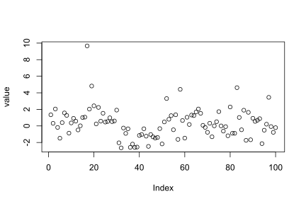
Pearson and Spearman correlation
Theory: As linear models
Model: the recipe for \(y\) is a slope (\(\beta_1\)) times \(x\) plus an intercept (\(\beta_0\), aka a straight line).
\[y = \beta_0 + \beta_1 x \qquad \mathcal{H}_0: \beta_1 = 0\]
… which is a math-y way of writing the good old \(y = ax + b\) (here ordered as \(y = b + ax\)). In R we are lazy and write y ~ 1 + x which R reads like y = 1*number + x*othernumber and the task of t-tests, lm, etc., is simply to find the numbers that best predict \(y\).
Either way you write it, it’s an intercept (\(\beta_0\)) and a slope (\(\beta_1\)) yielding a straight line:
matrix(c(1, 0.8, 1, 0.8), ncol = 2)## [,1] [,2]
## [1,] 1.0 1.0
## [2,] 0.8 0.8matrix(c(10,3,3,2),2,2)## [,1] [,2]
## [1,] 10 3
## [2,] 3 2data.frame(MASS::mvrnorm(30, mu = c(0.9, 0.9), Sigma = matrix(c(1, 0.8, 1, 0.8), ncol = 2), empirical = TRUE)) # Correlated data## X1 X2
## 1 2.45600484 2.540950290
## 2 2.26124006 2.919492489
## 3 0.42684789 -0.086736504
## 4 0.76554517 0.261209857
## 5 1.38979062 1.082800880
## 6 -0.68705006 0.139495735
## 7 1.98775389 2.101443922
## 8 -1.20151292 -0.993196677
## 9 1.41092548 1.566501475
## 10 1.40939014 0.453190835
## 11 -0.36424016 -0.069808522
## 12 -0.84949145 0.033873520
## 13 1.14047983 0.940798253
## 14 1.54307691 1.239969890
## 15 -0.25177318 0.003715194
## 16 2.34857533 1.893354294
## 17 1.75790184 1.425004385
## 18 0.14287975 0.400994980
## 19 1.13035767 1.316340759
## 20 1.39972793 0.797433749
## 21 0.62882408 0.730267672
## 22 1.64168401 1.843714523
## 23 1.91233838 1.388068578
## 24 1.60766921 1.466846855
## 25 0.44118797 -0.186642420
## 26 -0.32701477 -0.117693078
## 27 0.35278987 0.786427827
## 28 -0.06385019 0.412086493
## 29 1.16836323 1.134952011
## 30 1.42157862 1.575142734D_correlation = data.frame(MASS::mvrnorm(30, mu = c(0.9, 0.9), Sigma = matrix(c(1, 0.8, 1, 0.8), ncol = 2), empirical = TRUE)) # Correlated data
colMeans(D_correlation)## X1 X2
## 0.9 0.9cov(D_correlation)## X1 X2
## X1 1.0 0.8
## X2 0.8 0.8# Fixed correlation
D_correlation = data.frame(MASS::mvrnorm(30, mu = c(0.9, 0.9), Sigma = matrix(c(1, 0.8, 1, 0.8), ncol = 2), empirical = TRUE)) # Correlated data
# Add labels (for next plot)
D_correlation$label_num = sprintf('(%.1f,%.1f)', D_correlation$X1, D_correlation$X2)
D_correlation$label_rank = sprintf('(%i,%i)', rank(D_correlation$X1), rank(D_correlation$X2))
D_correlation## X1 X2 label_num label_rank
## 1 2.1302518 1.89616689 (2.1,1.9) (28,25)
## 2 1.2057786 1.63552097 (1.2,1.6) (21,24)
## 3 0.1689564 0.08544956 (0.2,0.1) (7,7)
## 4 1.8724590 2.10272571 (1.9,2.1) (26,28)
## 5 -0.7351348 -0.60739840 (-0.7,-0.6) (3,1)
## 6 0.8890323 1.33246669 (0.9,1.3) (14,19)
## 7 1.8528334 1.55062142 (1.9,1.6) (25,22)
## 8 0.8187449 0.41262053 (0.8,0.4) (13,11)
## 9 1.0417000 1.30042952 (1.0,1.3) (19,18)
## 10 -0.7405273 -0.12954818 (-0.7,-0.1) (2,6)
## 11 0.9036606 0.38211089 (0.9,0.4) (15,10)
## 12 1.0252168 1.48080025 (1.0,1.5) (18,21)
## 13 -0.3332069 -0.24655685 (-0.3,-0.2) (5,4)
## 14 0.4956308 0.64278685 (0.5,0.6) (10,14)
## 15 1.3866276 1.08298169 (1.4,1.1) (22,16)
## 16 -0.4144748 -0.56308080 (-0.4,-0.6) (4,2)
## 17 2.8613446 2.34954847 (2.9,2.3) (29,30)
## 18 3.0283524 2.09315046 (3.0,2.1) (30,27)
## 19 -0.1301395 0.14355983 (-0.1,0.1) (6,8)
## 20 1.7544009 0.96668263 (1.8,1.0) (24,15)
## 21 0.9378148 0.53298530 (0.9,0.5) (16,12)
## 22 0.8165806 0.57247354 (0.8,0.6) (12,13)
## 23 0.3210004 0.18773006 (0.3,0.2) (9,9)
## 24 1.4266704 2.07551851 (1.4,2.1) (23,26)
## 25 0.8009172 1.58381271 (0.8,1.6) (11,23)
## 26 0.2560323 -0.24942169 (0.3,-0.2) (8,3)
## 27 2.0907237 2.14275659 (2.1,2.1) (27,29)
## 28 0.9688419 1.33876453 (1.0,1.3) (17,20)
## 29 1.1957502 1.12164183 (1.2,1.1) (20,17)
## 30 -0.8958382 -0.21729950 (-0.9,-0.2) (1,5)D_correlation$X2 * 0.5 + 0.4## [1] 1.3480834 1.2177605 0.4427248 1.4513629 0.0963008 1.0662333 1.1753107
## [8] 0.6063103 1.0502148 0.3352259 0.5910554 1.1404001 0.2767216 0.7213934
## [15] 0.9414908 0.1184596 1.5747742 1.4465752 0.4717799 0.8833413 0.6664927
## [22] 0.6862368 0.4938650 1.4377593 1.1919064 0.2752892 1.4713783 1.0693823
## [29] 0.9608209 0.2913502I(D_correlation$X2 * 0.5 + 0.4)## [1] 1.3480834 1.2177605 0.4427248 1.4513629 0.0963008 1.0662333 1.1753107
## [8] 0.6063103 1.0502148 0.3352259 0.5910554 1.1404001 0.2767216 0.7213934
## [15] 0.9414908 0.1184596 1.5747742 1.4465752 0.4717799 0.8833413 0.6664927
## [22] 0.6862368 0.4938650 1.4377593 1.1919064 0.2752892 1.4713783 1.0693823
## [29] 0.9608209 0.2913502# Plot it
fit = lm(I(X2 * 0.5 + 0.4) ~ I(X1 * 0.5 + 0.2), D_correlation)
coefficients(fit)## (Intercept) I(X1 * 0.5 + 0.2)
## 0.33 0.80# pearson intercept
intercept_pearson = coefficients(fit)[1]
P_pearson = ggplot(D_correlation, aes(x=X1*0.5+0.2, y=X2*0.5+0.4)) +
geom_smooth(method=lm, se=FALSE, lwd=2, aes(colour='beta_1')) +
geom_segment(x=-100, xend=100,
y=intercept_pearson, yend=intercept_pearson,
lwd=2, aes(color="beta_0")) +
scale_color_manual(name=NULL, values=c("blue", "red"), labels=c(bquote(beta[0]*" (intercept)"), bquote(beta[1]*" (slope)")))
theme_axis(P_pearson, legend.position = c(0.4, 0.9))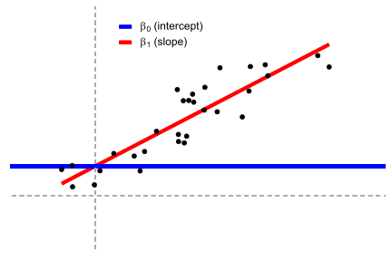
This is often simply called a regression model which can be extended to multiple regression where there are several \(\beta\)s and on the right-hand side multiplied with the predictors. Everything below, from one-sample t-test to two-way ANOVA are just special cases of this system. Nothing more, nothing less.
As the name implies, the Spearman rank correlation is a Pearson correlation on rank-transformed \(x\) and \(y\):
\[rank(y) = \beta_0 + \beta_1 \cdot rank(x) \qquad \mathcal{H}_0: \beta_1 = 0\]
I’ll introduce ranks in a minute. For now, notice that the correlation coefficient of the linear model is identical to a “real” Pearson correlation, but p-values are an approximation which is is appropriate for samples greater than N=10 and almost perfect when N > 20.
Such a nice and non-mysterious equivalence that many students are left unaware of! Visualizing them side by side including data labels, we see this rank-transformation in action:
rank(D_correlation$X1)## [1] 28 21 7 26 3 14 25 13 19 2 15 18 5 10 22 4 29 30 6 24 16 12 9 23 11
## [26] 8 27 17 20 1rank(D_correlation$X2)## [1] 25 24 7 28 1 19 22 11 18 6 10 21 4 14 16 2 30 27 8 15 12 13 9 26 23
## [26] 3 29 20 17 5# Spearman intercept
coefficients(lm(rank(X2) ~ rank(X1), D_correlation))## (Intercept) rank(X1)
## 1.7241379 0.8887653# Spearman intercept
intercept_spearman = coefficients(lm(rank(X2) ~ rank(X1), D_correlation))[1]
# Spearman plot
P_spearman = ggplot(D_correlation, aes(x=rank(X1), y=rank(X2))) +
geom_smooth(method=lm, se=FALSE, lwd=2, aes(color='beta_1')) +
geom_text(aes(label=label_rank), nudge_y=1, size=3, color='dark gray') +
geom_segment(x=-100, xend=100,
y=intercept_spearman, yend=intercept_spearman,
lwd=2, aes(color='beta_0')) +
scale_color_manual(name=NULL, values=c("blue", "red"), labels=c(bquote(beta[0]*" (intercept)"), bquote(beta[1]*" (slope)")))
# Stich together using patchwork
(theme_axis(P_pearson, legend.position=c(0.5, 0.1)) + geom_text(aes(label=label_num), nudge_y=0.1, size=3, color='dark gray') + labs(title=' Pearson')) + (theme_axis(P_spearman, xlim=c(-7.5, 30), ylim=c(-7.5, 30), legend.position=c(0.5, 0.1)) + labs(title=' Spearman'))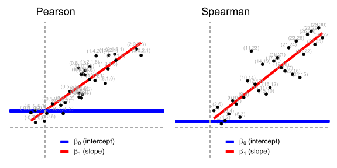
Theory: rank-transformation
rank simply takes a list of numbers and “replace” them with the integers of their rank (1st smallest, 2nd smallest, 3rd smallest, etc.). So the result of the rank-transformation rank(c(3.6, 3.4, -5.0, 8.2)) is 3, 2, 1, 4. See that in the figure above?
A signed rank is the same, just where we rank according to absolute size first and then add in the sign second. So the signed rank here would be 2, 1, -3, 4. Or in code:
signed_rank = function(x) sign(x) * rank(abs(x))I hope I don’t offend anyone when I say that ranks are easy; yet it’s all you need to do to convert most parametric tests into their “non-parametric” counterparts! One interesting implication is that many “non-parametric tests” are about as parametric as their parametric counterparts with means, standard deviations, homogeneity of variance, etc. - just on rank-transformed data. That’s why I put “non-parametric” in quotation marks.
R code: Pearson correlation
It couldn’t be much simpler to run these models in R. They yield identical p and t, but there’s a catch: lm gives you the slope and even though that is usually much more interpretable and informative than the correlation coefficient r, you may still want r. Luckily, the slope becomes r if x and y have identical standard deviations. For now, we will use scale(x) to make \(SD(x) = 1.0\) and \(SD(y) = 1.0\):
a = cor.test(y, x, method = "pearson") # Built-in
b = lm(y ~ 1 + x) # Equivalent linear model: y = Beta0*1 + Beta1*x
c = lm(scale(y) ~ 1 + scale(x)) # On scaled vars to recover rResults:
at = tidy(a)
bt = tidy(b)[2,] # Only slope
bt$conf.low = confint(b)[2, 1]
bt$conf.high = confint(b)[2, 2]
ct = tidy(c)[2,] # Only slope
ct$conf.low = confint(c)[2, 1]
ct$conf.high = confint(c)[2, 2]
# Merge and print nicely
df = bind_rows(at, ct, bt) %>%
mutate(model = c('cor.test', 'lm scaled', 'lm')) %>%
rename(t = statistic,
r = estimate) %>%
select(model, p.value, t, r, conf.low, conf.high)
print_df(df)a##
## Pearson's product-moment correlation
##
## data: y and x
## t = -0.3705, df = 48, p-value = 0.7126
## alternative hypothesis: true correlation is not equal to 0
## 95 percent confidence interval:
## -0.3268890 0.2283417
## sample estimates:
## cor
## -0.05340008summary(b)##
## Call:
## lm(formula = y ~ 1 + x)
##
## Residuals:
## Min 1Q Median 3Q Max
## -2.7805 -1.3769 -0.1222 0.8402 9.4128
##
## Coefficients:
## Estimate Std. Error t value Pr(>|t|)
## (Intercept) 0.1260 0.2990 0.421 0.675
## x -0.1119 0.3020 -0.370 0.713
##
## Residual standard error: 2.114 on 48 degrees of freedom
## Multiple R-squared: 0.002852, Adjusted R-squared: -0.01792
## F-statistic: 0.1373 on 1 and 48 DF, p-value: 0.7126summary(c)##
## Call:
## lm(formula = scale(y) ~ 1 + scale(x))
##
## Residuals:
## Min 1Q Median 3Q Max
## -1.3268 -0.6571 -0.0583 0.4010 4.4918
##
## Coefficients:
## Estimate Std. Error t value Pr(>|t|)
## (Intercept) -4.192e-19 1.427e-01 0.00 1.000
## scale(x) -5.340e-02 1.441e-01 -0.37 0.713
##
## Residual standard error: 1.009 on 48 degrees of freedom
## Multiple R-squared: 0.002852, Adjusted R-squared: -0.01792
## F-statistic: 0.1373 on 1 and 48 DF, p-value: 0.7126The CIs are not exactly identical, but very close.
R code: Spearman correlation
Note that we can interpret the slope which is the number of ranks \(y\) change for each rank on \(x\). I think that this is a pretty interesting number. However, the intercept is less interpretable since it lies at \(rank(x) = 0\) which is impossible since x starts at 1.
See the identical r (now “rho”) and p:
# Spearman correlation
a = cor.test(y, x, method = "spearman") # Built-in
b = lm(rank(y) ~ 1 + rank(x)) # Equivalent linear modelLet’s look at the results:
df = data.frame(
model = c('cor.test', 'lm'),
p.value = c(a$p.value, tidy(b)$p.value[2]),
rho = c(a$estimate, b$coefficients[2])
)
print_df(df)a##
## Spearman's rank correlation rho
##
## data: y and x
## S = 20060, p-value = 0.7996
## alternative hypothesis: true rho is not equal to 0
## sample estimates:
## rho
## 0.03673469summary(b)##
## Call:
## lm(formula = rank(y) ~ 1 + rank(x))
##
## Residuals:
## Min 1Q Median 3Q Max
## -25.3633 -11.5520 0.4592 12.5592 25.1796
##
## Coefficients:
## Estimate Std. Error t value Pr(>|t|)
## (Intercept) 24.56327 4.22626 5.812 4.85e-07 ***
## rank(x) 0.03673 0.14424 0.255 0.8
## ---
## Signif. codes: 0 '***' 0.001 '**' 0.01 '*' 0.05 '.' 0.1 ' ' 1
##
## Residual standard error: 14.72 on 48 degrees of freedom
## Multiple R-squared: 0.001349, Adjusted R-squared: -0.01946
## F-statistic: 0.06486 on 1 and 48 DF, p-value: 0.8001One mean
One sample t-test and Wilcoxon signed-rank
Theory: As linear models
t-test model: A single number predicts \(y\).
\[y = \beta_0 \qquad \mathcal{H}_0: \beta_0 = 0\]
In other words, it’s our good old \(y = \beta_0 + \beta_1*x\) where the last term is gone since there is no \(x\) (essentially \(x=0\), see left figure below).
The same is to a very close approximately true for Wilcoxon signed-rank test, just with the signed ranks of \(y\) instead of \(y\) itself (see right panel below).
\[signed\_rank(y) = \beta_0\]
library(ggplot2)
D_t1 = data.frame(y = rnorm_fixed(20, 0.5, 0.6),
x = runif(20, 0.93, 1.07)) # Fix mean and SD
ggplot(D_t1, aes(y = y, x = x)) + geom_point()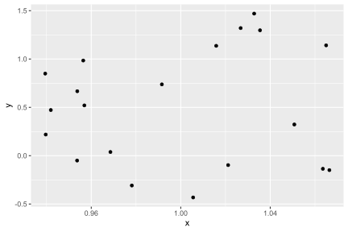
D_t1_rank = data.frame(y = signed_rank(D_t1$y))
P_t1_rank <- ggplot(D_t1_rank, aes(y = y, x = 0)) + geom_point() +
geom_text(aes(label = y), nudge_x = 0.1, size = 3, color = 'dark gray') +
geom_text(aes(label = signif(D_t1$y, digits = 2)), nudge_x = -0.1, size = 3, color = 'dark gray')
theme_axis(P_t1_rank, ylim = NULL, legend.position = c(0.6, 0.1))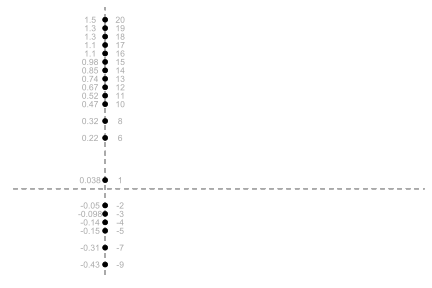
# T-test
D_t1 = data.frame(y = rnorm_fixed(20, 0.5, 0.6),
x = runif(20, 0.93, 1.07)) # Fix mean and SD
P_t1 = ggplot(D_t1, aes(y = y, x = 0)) +
stat_summary(fun=mean, geom = "errorbar", aes(ymax = ..y.., ymin = ..y.., color='beta_0'), lwd=2) +
scale_color_manual(name = NULL, values = c("blue"), labels = c(bquote(beta[0] * " (intercept)"))) +
geom_text(aes(label = round(y, 1)), nudge_x = 0.2, size = 3, color = 'dark gray') +
labs(title=' T-test')
# Wilcoxon
D_t1_rank = data.frame(y = signed_rank(D_t1$y))
P_t1_rank = ggplot(D_t1_rank, aes(y = y, x = 0)) +
stat_summary(fun = mean, geom = "errorbar", aes(ymax = ..y.., ymin = ..y.., color = 'beta_0'), lwd = 2) +
scale_color_manual(name = NULL, values = c("blue"), labels = c(bquote(beta[0] * " (intercept)"))) +
geom_text(aes(label = y), nudge_x = 0.2, size = 3, color = 'dark gray') +
labs(title=' Wilcoxon')
# Stich together using patchwork
theme_axis(P_t1, ylim = c(-1, 2), legend.position = c(0.6, 0.1)) +
theme_axis(P_t1_rank, ylim = NULL, legend.position = c(0.6, 0.1))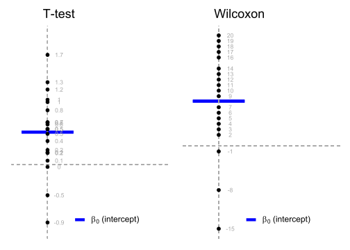
R code: One-sample t-test
Try running the R code below and see that the linear model (lm) produces the same \(t\), \(p\), and \(r\) as the built-in t.test. The confidence interval is not presented in the output of lm but is also identical if you use confint(lm(...)):
As an example, in the one-sample t-test
\[{\displaystyle t={\frac {Z}{s}}={\frac {{\bar {X}}-\mu }{{\widehat {\sigma }}/{\sqrt {n}}}}}\] where \(\bar{X}\) is the sample mean from a sample \(X_1, X_2, \cdots, X_n\), of size \(n\), \(s\) is the standard error of the mean, \[{\textstyle {\widehat {\sigma }}}\] is the estimate of the standard deviation of the population, and \(\mu\) is the population mean.
y## [1] 1.34415507 0.31555720 2.04544486 -0.18247053 -1.48393823 0.39716563
## [7] 1.56965755 1.27023296 -0.87144335 0.36088326 0.91588753 0.57451813
## [13] -0.48540403 0.01574267 1.01421468 1.05987318 9.66291621 2.03125370
## [19] 4.81857762 2.42832640 0.24373611 2.23395851 0.57557808 1.53072013
## [25] 0.46279335 0.53334498 0.98177841 0.51686471 0.60023822 1.90860083
## [31] -2.03814628 -2.65312958 -0.25348318 -0.90375805 -0.34660941 -2.58667691
## [37] -2.19348467 -2.60347559 -2.55175541 -1.15173818 -1.03423255 -0.34294500
## [43] -1.23812818 -2.46958196 -1.03672924 -1.32176835 -1.46765407 -1.39358410
## [49] -0.32576361 -2.17659650(mean(y)-0)/(sd(y)/sqrt(length(y))) # t## [1] 0.4251309sd(y)## [1] 2.09556sqrt(sum((y-mean(y))^2)/(length(y)-1))## [1] 2.09556length(y)## [1] 50mean(y)## [1] 0.12599051-pt((mean(y)-0)/(sd(y)/sqrt(length(y))), df=length(y)-1)## [1] 0.3363012pt(0, df=49)## [1] 0.52*(1-pt(0.4251309, df=49)) # two tails ## [1] 0.6726025# Built-in t-test
a = t.test(y)
# Equivalent linear model: intercept-only
b = lm(y ~ 1)Results:
df = data.frame(
model = c('t.test', 'lm'),
mean = c(a$estimate, b$coefficients),
p.value = c(a$p.value, tidy(b)$p.value),
t = c(a$statistic, tidy(b)$statistic),
df = c(a$parameter, b$df.residual),
conf.low = c(a$conf.int[1], confint(b)[1]),
conf.high = c(a$conf.int[2], confint(b)[2])
)
print_df(df)2*pt(0.42513, df=49, lower=FALSE) #Use pt and make it two-tailed.## [1] 0.6726031a##
## One Sample t-test
##
## data: y
## t = 0.42513, df = 49, p-value = 0.6726
## alternative hypothesis: true mean is not equal to 0
## 95 percent confidence interval:
## -0.4695610 0.7215419
## sample estimates:
## mean of x
## 0.1259905summary(b)##
## Call:
## lm(formula = y ~ 1)
##
## Residuals:
## Min 1Q Median 3Q Max
## -2.7791 -1.3425 0.0037 0.8801 9.5369
##
## Coefficients:
## Estimate Std. Error t value Pr(>|t|)
## (Intercept) 0.1260 0.2964 0.425 0.673
##
## Residual standard error: 2.096 on 49 degrees of freedomR code: Wilcoxon signed-rank test
In addition to matching p-values, lm also gives us the mean signed rank, which I find to be an informative number.
# Built-in
a = wilcox.test(y)
# Equivalent linear model
b = lm(signed_rank(y) ~ 1) # See? Same model as above, just on signed ranks
# Bonus: of course also works for one-sample t-test
c = t.test(signed_rank(y))Results:
df = data.frame(
model = c('wilcox.test', 'lm', 't.test'),
p.value = c(a$p.value, tidy(b)$p.value, c$p.value),
mean_rank = c(NA, tidy(b)$estimate, c$estimate)
)
print_df(df)a##
## Wilcoxon signed rank test with continuity correction
##
## data: y
## V = 625, p-value = 0.9078
## alternative hypothesis: true location is not equal to 0summary(b)##
## Call:
## lm(formula = signed_rank(y) ~ 1)
##
## Residuals:
## Min 1Q Median 3Q Max
## -47.50 -26.25 2.50 22.25 50.50
##
## Coefficients:
## Estimate Std. Error t value Pr(>|t|)
## (Intercept) -0.500 4.185 -0.119 0.905
##
## Residual standard error: 29.59 on 49 degrees of freedomc##
## One Sample t-test
##
## data: signed_rank(y)
## t = -0.11947, df = 49, p-value = 0.9054
## alternative hypothesis: true mean is not equal to 0
## 95 percent confidence interval:
## -8.910332 7.910332
## sample estimates:
## mean of x
## -0.5Paired samples t-test and Wilcoxon matched pairs
Theory: As linear models
t-test model: a single number (intercept) predicts the pairwise differences.
\[y_2-y_1 = \beta_0 \qquad \mathcal{H}_0: \beta_0 = 0\]
This means that there is just one \(y = y_2 - y_1\) to predict and it becomes a one-sample t-test on the pairwise differences. The visualization is therefore also the same as for the one-sample t-test. At the risk of overcomplicating a simple substraction, you can think of these pairwise differences as slopes (see left panel of the figure), which we can represent as y-offsets (see right panel of the figure):
# Data for plot
N = nrow(D_t1)
start = rnorm_fixed(N, 0.2, 0.3)
D_tpaired = data.frame(
x = rep(c(0, 1), each = N),
y = c(start, start + D_t1$y),
id = 1:N
)
# Plot
P_tpaired = ggplot(D_tpaired, aes(x = x, y = y)) +
geom_line(aes(group = id)) +
labs(title = ' Pairs')
# Use patchwork to put them side-by-side
theme_axis(P_tpaired) + theme_axis(P_t1, legend.position = c(0.6, 0.1))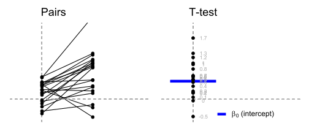
Similarly, the Wilcoxon matched pairs only differ from Wilcoxon signed-rank in that it’s testing the signed ranks of the pairwise \(y-x\) differences.
\[signed\_rank(y_2-y_1) = \beta_0 \qquad \mathcal{H}_0: \beta_0 = 0\]
R code: Paired sample t-test
a = t.test(y, y2, paired = TRUE) # Built-in paired t-test
b = lm(y - y2 ~ 1) # Equivalent linear modelResults:
df = data.frame(
model = c('t.test', 'lm'),
mean = c(a$estimate, b$coefficients),
p.value = c(a$p.value, tidy(b)$p.value),
df = c(a$parameter, b$df.residual),
t = c(a$statistic, tidy(b)$statistic),
conf.low = c(a$conf.int[1], confint(b)[1]),
conf.high = c(a$conf.int[2], confint(b)[2])
)
print_df(df)a##
## Paired t-test
##
## data: y and y2
## t = -1.0988, df = 49, p-value = 0.2772
## alternative hypothesis: true mean difference is not equal to 0
## 95 percent confidence interval:
## -1.0580285 0.3100095
## sample estimates:
## mean difference
## -0.3740095summary(b)##
## Call:
## lm(formula = y - y2 ~ 1)
##
## Residuals:
## Min 1Q Median 3Q Max
## -4.5448 -1.1943 -0.4006 0.9679 8.5158
##
## Coefficients:
## Estimate Std. Error t value Pr(>|t|)
## (Intercept) -0.3740 0.3404 -1.099 0.277
##
## Residual standard error: 2.407 on 49 degrees of freedomR code: Wilcoxon matched pairs
Again, we do the signed-ranks trick. This is still an approximation, but a close one:
# Built-in Wilcoxon matched pairs
a = wilcox.test(y, y2, paired = TRUE)
# Equivalent linear model:
b = lm(signed_rank(y - y2) ~ 1)
# Bonus: identical to one-sample t-test ong signed ranks
c = t.test(signed_rank(y - y2))Results:
# Print nicely
df = data.frame(
model = c('wilcox.test', 'lm', 't.test'),
p.value = c(a$p.value, tidy(b)$p.value, c$p.value),
mean_rank_diff = c(NA, b$coefficients, c$estimate)
)
print_df(df)a##
## Wilcoxon signed rank test with continuity correction
##
## data: y and y2
## V = 464, p-value = 0.09492
## alternative hypothesis: true location shift is not equal to 0summary(b)##
## Call:
## lm(formula = signed_rank(y - y2) ~ 1)
##
## Residuals:
## Min 1Q Median 3Q Max
## -41.06 -21.81 -7.06 18.69 56.94
##
## Coefficients:
## Estimate Std. Error t value Pr(>|t|)
## (Intercept) -6.940 4.067 -1.707 0.0942 .
## ---
## Signif. codes: 0 '***' 0.001 '**' 0.01 '*' 0.05 '.' 0.1 ' ' 1
##
## Residual standard error: 28.76 on 49 degrees of freedomc##
## One Sample t-test
##
## data: signed_rank(y - y2)
## t = -1.7066, df = 49, p-value = 0.09423
## alternative hypothesis: true mean is not equal to 0
## 95 percent confidence interval:
## -15.112198 1.232198
## sample estimates:
## mean of x
## -6.94For large sample sizes (N >> 100), this approaches the sign test to a reasonable degree, but this approximation is too inaccurate to flesh out here.
Two means
Independent t-test and Mann-Whitney U
Theory: As linear models
Independent t-test model: two means predict \(y\).
\[y_i = \beta_0 + \beta_1 x_i \qquad \mathcal{H}_0: \beta_1 = 0\]
where \(x_i\) is an indicator (0 or 1) saying whether data point \(i\) was sampled from one or the other group. Indicator variables (also called “dummy coding”) underly a lot of linear models and we’ll take an aside to see how it works in a minute.
Mann-Whitney U (also known as Wilcoxon rank-sum test for two independent groups; no signed rank this time) is the same model to a very close approximation, just on the ranks of \(x\) and \(y\) instead of the actual values:
\[rank(y_i) = \beta_0 + \beta_1 x_i \qquad \mathcal{H}_0: \beta_1 = 0\]
To me, equivalences like this make “non-parametric” statistics much easier to understand. The approximation is appropriate when the sample size is larger than 11 in each group and virtually perfect when N > 30 in each group.
Theory: Dummy coding
Dummy coding can be understood visually. The indicator is on the x-axis so data points from the first group are located at \(x = 0\) and data points from the second group is located at \(x = 1\). Then \(\beta_0\) is the intercept (blue line) and \(\beta_1\) is the slope between the two means (red line). Why? Because when \(\Delta x = 1\) the slope equals the difference because:
\[slope = \Delta y / \Delta x = \Delta y / 1 = \Delta y = difference\]
Magic! Even categorical differences can be modelled using linear models! It’s a true Swizz army knife.
# Data
N = 20 # Number of data points per group
D_t2 = data.frame(
x = rep(c(0, 1), each=N),
y = c(rnorm_fixed(N, 0.3, 0.3), rnorm_fixed(N, 1.3, 0.3))
)
# Plot
P_t2 = ggplot(D_t2, aes(x=x, y=y)) +
stat_summary(fun = mean, geom = "errorbar", aes(ymax = ..y.., ymin = ..y.., color = 'something'), lwd = 2) +
geom_segment(x = -10, xend = 10, y = 0.3, yend = 0.3, lwd = 2, aes(color = 'beta_0')) +
geom_segment(x = 0, xend = 1, y = 0.3, yend = 1.3, lwd = 2, aes(color = 'beta_1')) +
scale_color_manual(name = NULL, values = c("blue", "red", "green"), labels=c(bquote(beta[0]*" (group 1 mean)"), bquote(beta[1]*" (slope = difference)"), bquote(beta[0]+beta[1]%.%1*" (group 2 mean)")))
#scale_x_discrete(breaks=c(0.5, 1.5), labels=c('1', '2'))
theme_axis(P_t2, jitter = TRUE, xlim = c(-0.3, 2), legend.position = c(0.53, 0.08))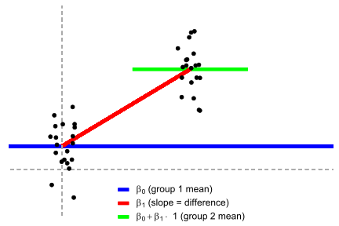
Theory: Dummy coding (continued)
If you feel like you get dummy coding now, just skip ahead to the next section. Here is a more elaborate explanation of dummy coding:
If a data point was sampled from the first group, i.e., when \(x_i = 0\), the model simply becomes \(y = \beta_0 + \beta_1 \cdot 0 = \beta_0\). In other words, the model predicts that that data point is \(beta_0\). It turns out that the \(\beta\) which best predicts a set of data points is the mean of those data points, so \(\beta_0\) is the mean of group 1.
On the other hand, data points sampled from the second group would have \(x_i = 1\) so the model becomes \[y_i = \beta_0 + \beta_1\cdot 1 = \beta_0 + \beta_1\]. In other words, we add \(\beta_1\) to “shift” from the mean of the first group to the mean of the second group. Thus \(\beta_1\) becomes the mean difference between the groups.
As an example, say group 1 is 25 years old (\(\beta_0 = 25\)) and group 2 is 28 years old (\(\beta_1 = 3\)), then the model for a person in group 1 is \(y = 25 + 3 \cdot 0 = 25\) and the model for a person in group 2 is \(y = 25 + 3 \cdot 1 = 28\).
Hooray, it works! For first-timers it takes a few moments to understand dummy coding, but you only need to know addition and multiplication to get there!
R code: independent t-test
As a reminder, when we write y ~ 1 + x in R, it is shorthand for \(y = \beta_0 \cdot 1 + \beta_1 \cdot x\) and R goes on computing the \(\beta\)s for you. Thus y ~ 1 + x is the R-way of writing \(y = a \cdot x + b\).
Notice the identical t, df, p, and estimates. We can get the confidence interval by running confint(lm(...)).
# Built-in independent t-test on wide data
a = t.test(y, y2, var.equal = TRUE)
# Be explicit about the underlying linear model by hand-dummy-coding:
group_y2 = ifelse(group == 'y2', 1, 0) # 1 if group == y2, 0 otherwise
b = lm(value ~ 1 + group_y2) # Using our hand-made dummy regressor
# Note: We could also do the dummy-coding in the model
# specification itself. Same result.
c = lm(value ~ 1 + I(group == 'y2'))Results:
mean(y) #mean-y## [1] 0.1259905mean(y2) #mean-y2## [1] 0.5The formula for a confidence interval of 1 sample t-test with confidence coefficient \(1−\alpha\) is:
\[(\bar{x}+t_{n−1,\alpha/2}\cdot \frac{s}{\sqrt n}, \;\;\;\bar{x}+t_{n−1,1-\alpha/2}\cdot \frac{s}{\sqrt n})\] t statistic \[t=\frac{\bar x -\mu}{s/\sqrt{n}}\]
The formula for a confidence interval of 2 independent sample t-test with confidence coefficient \(1−\alpha\) is: \[(\bar x_1 - \bar x_2) + t_{n_1+n_2−2,\alpha/2} s_p\sqrt{\frac{1}{n_1}+\frac{1}{n_2}}, \;\;\; (\bar x_1 - \bar x_2) + t_{n_1+n_2−2,1-\alpha/2} s_p\sqrt{\frac{1}{n_1}+\frac{1}{n_2}}\] where \[s_p=\sqrt{\frac{(n_1-1)s_1^2+(n_2-1)s_2^2}{n_1+n_2-2}}\]
length(y)## [1] 50length(y2)## [1] 50alpha=0.05
difference = mean(y)-mean(y2)
sp=sqrt((49*sd(y)^2+49*sd(y2)^2)/98)
difference+qt(alpha/2, df=98)*sp*sqrt(2/50)## [1] -1.097258difference+qt(1-alpha/2, df=98)*sp*sqrt(2/50)## [1] 0.3492394a$estimate## mean of x mean of y
## 0.1259905 0.5000000a$p.value## [1] 0.3073161a$parameter## df
## 98a$conf.int## [1] -1.0972585 0.3492394
## attr(,"conf.level")
## [1] 0.95summary(b)##
## Call:
## lm(formula = value ~ 1 + group_y2)
##
## Residuals:
## Min 1Q Median 3Q Max
## -2.7791 -1.1897 -0.0632 0.8484 9.5369
##
## Coefficients:
## Estimate Std. Error t value Pr(>|t|)
## (Intercept) 0.1260 0.2577 0.489 0.626
## group_y2 0.3740 0.3645 1.026 0.307
##
## Residual standard error: 1.822 on 98 degrees of freedom
## Multiple R-squared: 0.01063, Adjusted R-squared: 0.0005363
## F-statistic: 1.053 on 1 and 98 DF, p-value: 0.3073summary(b)$df[2]## [1] 98a$conf.int## [1] -1.0972585 0.3492394
## attr(,"conf.level")
## [1] 0.95confint(b)## 2.5 % 97.5 %
## (Intercept) -0.3854238 0.6374047
## group_y2 -0.3492394 1.0972585confint(b)[2,1]## [1] -0.3492394# Put it together. Note that the signs are inversed for t.test.
df = data.frame(
model = c('t.test', 'lm'),
mean_y = c(a$estimate[1], summary(b)$coefficients[1,1]),
mean_y2 = c(a$estimate[2], sum(summary(b)$coefficients[,1])),
difference = c(a$estimate[2] - a$estimate[1], summary(b)$coefficients[2,1]),
p.value = c(a$p.value, summary(b)$coefficients[2,4]),
df = c(a$parameter, summary(b)$df[2]),
conf.low = c(a$conf.int[1], confint(b)[2,1]),
conf.high = c(a$conf.int[2], confint(b)[2,2])
)
# Print it nicely
print_df(df)a##
## Two Sample t-test
##
## data: y and y2
## t = -1.0262, df = 98, p-value = 0.3073
## alternative hypothesis: true difference in means is not equal to 0
## 95 percent confidence interval:
## -1.0972585 0.3492394
## sample estimates:
## mean of x mean of y
## 0.1259905 0.5000000summary(b)##
## Call:
## lm(formula = value ~ 1 + group_y2)
##
## Residuals:
## Min 1Q Median 3Q Max
## -2.7791 -1.1897 -0.0632 0.8484 9.5369
##
## Coefficients:
## Estimate Std. Error t value Pr(>|t|)
## (Intercept) 0.1260 0.2577 0.489 0.626
## group_y2 0.3740 0.3645 1.026 0.307
##
## Residual standard error: 1.822 on 98 degrees of freedom
## Multiple R-squared: 0.01063, Adjusted R-squared: 0.0005363
## F-statistic: 1.053 on 1 and 98 DF, p-value: 0.3073summary(c)##
## Call:
## lm(formula = value ~ 1 + I(group == "y2"))
##
## Residuals:
## Min 1Q Median 3Q Max
## -2.7791 -1.1897 -0.0632 0.8484 9.5369
##
## Coefficients:
## Estimate Std. Error t value Pr(>|t|)
## (Intercept) 0.1260 0.2577 0.489 0.626
## I(group == "y2")TRUE 0.3740 0.3645 1.026 0.307
##
## Residual standard error: 1.822 on 98 degrees of freedom
## Multiple R-squared: 0.01063, Adjusted R-squared: 0.0005363
## F-statistic: 1.053 on 1 and 98 DF, p-value: 0.3073R code: Mann-Whitney U
# Wilcoxon / Mann-Whitney U
a = wilcox.test(y, y2)
# As linear model with our dummy-coded group_y2:
b = lm(rank(value) ~ 1 + group_y2) # compare to linear model abovedf = data.frame(
model = c('wilcox.test', 'lm'),
p.value = c(a$p.value, tidy(b)$p.value[2]),
rank_diff = c(NA, b$coefficients[2])
)
print_df(df)a##
## Wilcoxon rank sum test with continuity correction
##
## data: y and y2
## W = 1045, p-value = 0.1586
## alternative hypothesis: true location shift is not equal to 0summary(b)##
## Call:
## lm(formula = rank(value) ~ 1 + group_y2)
##
## Residuals:
## Min 1Q Median 3Q Max
## -46.60 -24.80 0.50 23.85 53.60
##
## Coefficients:
## Estimate Std. Error t value Pr(>|t|)
## (Intercept) 46.400 4.082 11.37 <2e-16 ***
## group_y2 8.200 5.773 1.42 0.159
## ---
## Signif. codes: 0 '***' 0.001 '**' 0.01 '*' 0.05 '.' 0.1 ' ' 1
##
## Residual standard error: 28.86 on 98 degrees of freedom
## Multiple R-squared: 0.02017, Adjusted R-squared: 0.01018
## F-statistic: 2.018 on 1 and 98 DF, p-value: 0.1586Welch’s t-test
This is identical to the (Student’s) independent t-test above except that Student’s assumes identical variances and Welch’s t-test does not. So the linear model is the same but we model one variance per group. We can do this using the nlme package (see more details here):
# Built-in
a = t.test(y, y2, var.equal=FALSE)
# As linear model with per-group variances
b = nlme::gls(value ~ 1 + group_y2, weights = nlme::varIdent(form=~1|group), method="ML")Results:
df = data.frame(
model = c('t.test', 'gls'),
mean_y = c(a$estimate[1], b$coefficients[1]),
mean_diff = c(a$estimate[2] - a$estimate[1], b$coefficients[2]),
p.value = c(a$p.value, coef(summary(b))[2, 4]),
t = c(a$statistic, -coef(summary(b))[2, 3]),
conf.low = c(-a$conf.int[2], confint(b)[2, 1]),
conf.high = c(-a$conf.int[1], confint(b)[2, 2])
)
print_df(df)a##
## Welch Two Sample t-test
##
## data: y and y2
## t = -1.0262, df = 88.771, p-value = 0.3076
## alternative hypothesis: true difference in means is not equal to 0
## 95 percent confidence interval:
## -1.0981994 0.3501804
## sample estimates:
## mean of x mean of y
## 0.1259905 0.5000000summary(b)## Generalized least squares fit by maximum likelihood
## Model: value ~ 1 + group_y2
## Data: NULL
## AIC BIC logLik
## 404.296 414.7167 -198.148
##
## Variance function:
## Structure: Different standard deviations per stratum
## Formula: ~1 | group
## Parameter estimates:
## y1 y2
## 1.0000000 0.7157993
##
## Coefficients:
## Value Std.Error t-value p-value
## (Intercept) 0.1259905 0.2963569 0.4251309 0.6717
## group_y2 0.3740095 0.3644549 1.0262161 0.3073
##
## Correlation:
## (Intr)
## group_y2 -0.813
##
## Standardized residuals:
## Min Q1 Med Q3 Max
## -1.77683721 -0.66432885 -0.03198632 0.49966158 4.59722062
##
## Residual standard error: 2.074498
## Degrees of freedom: 100 total; 98 residualThree or more means
ANOVAs are linear models with (only) categorical predictors so they simply extend everything we did above, relying heavily on dummy coding. Do make sure to read the section on dummy coding if you haven’t already.
One-way ANOVA and Kruskal-Wallis
Theory: As linear models
Model: One mean for each group predicts \(y\).
\[y = \beta_0 + \beta_1 x_1 + \beta_2 x_2 + \beta_3 x_3 +... \qquad \mathcal{H}_0: y = \beta_0\]
where \(x_i\) are indicators (\(x=0\) or \(x=1\)) where at most one \(x_i=1\) while all others are \(x_i=0\).
Notice how this is just “more of the same” of what we already did in other models above. When there are only two groups, this model is \(y = \beta_0 + \beta_1*x\), i.e. the independent t-test. If there is only one group, it is \(y = \beta_0\), i.e. the one-sample t-test. This is easy to see in the visualization below - just cover up a few groups and see that it matches the other visualizations above.
# Figure
N = 15
D_anova1 = data.frame(
y = c(
rnorm_fixed(N, 0.5, 0.3),
rnorm_fixed(N, 0, 0.3),
rnorm_fixed(N, 1, 0.3),
rnorm_fixed(N, 0.8, 0.3)
),
x = rep(0:3, each = 15)
)
ymeans = aggregate(y~x, D_anova1, mean)$y
P_anova1 = ggplot(D_anova1, aes(x=x, y=y)) +
stat_summary(fun=mean, geom = "errorbar", aes(ymax = ..y.., ymin = ..y.., color='intercepts'), lwd=2) +
geom_segment(x = -10, xend = 100, y = 0.5, yend = 0.5, lwd = 2, aes(color = 'beta_0')) +
geom_segment(x = 0, xend = 1, y = ymeans[1], yend = ymeans[2], lwd = 2, aes(color = 'betas')) +
geom_segment(x = 1, xend = 2, y = ymeans[1], yend = ymeans[3], lwd = 2, aes(color = 'betas')) +
geom_segment(x = 2, xend = 3, y = ymeans[1], yend = ymeans[4], lwd = 2, aes(color = 'betas')) +
scale_color_manual(
name = NULL, values = c("blue", "red", "green"),
labels=c(
bquote(beta[0]*" (group 1 mean)"),
bquote(beta[1]*", "*beta[2]*", etc. (slopes/differences to "*beta[0]*")"),
bquote(beta[0]*"+"*beta[1]*", "*beta[0]*"+"*beta[2]*", etc. (group 2, 3, ... means)")
)
)
theme_axis(P_anova1, xlim = c(-0.5, 4), legend.position = c(0.7, 0.1))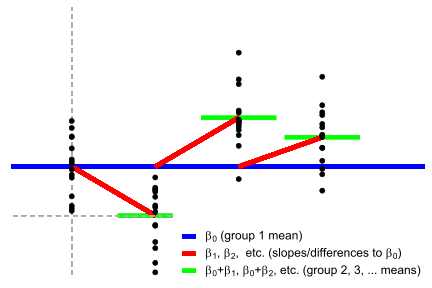
A one-way ANOVA has a log-linear counterpart called goodness-of-fit test which we’ll return to. By the way, since we now regress on more than one \(x\), the one-way ANOVA is a multiple regression model.
The Kruskal-Wallis test is simply a one-way ANOVA on the rank-transformed \(y\) (value):
\[rank(y) = \beta_0 + \beta_1 x_1 + \beta_2 x_2 + \beta_3 x_3 +...\]
This approximation is good enough for 12 or more data points. Again, if you do this for just one or two groups, we’re already acquainted with those equations, i.e. the Wilcoxon signed-rank test or the Mann-Whitney U test respectively.
Example data
We make a three-level factor with the levels a, b, and c so that the one-way ANOVA basically becomes a “three-sample t-test”. Then we manually do the dummy coding of the groups.
# Three variables in "long" format
N = 20 # Number of samples per group
D = data.frame(
value = c(rnorm_fixed(N, 0), rnorm_fixed(N, 1), rnorm_fixed(N, 0.5)),
group = rep(c('a', 'b', 'c'), each = N),
# Explicitly add indicator/dummy variables
# Could also be done using model.matrix(~D$group)
#group_a = rep(c(1, 0, 0), each=N), # This is the intercept. No need to code
group_b = rep(c(0, 1, 0), each = N),
group_c = rep(c(0, 0, 1), each = N)
) # N of each levelprint_df(D, navigate=TRUE)D$value## [1] -0.99986550 -0.08102959 0.33317532 -0.11018630 -0.44884149 0.46412376
## [7] 0.51543519 -0.28355654 -0.74246374 -1.65909364 1.11255118 1.64754056
## [13] 1.86717990 0.85784150 -0.24647087 -2.18596427 -0.52118124 -0.28520725
## [19] 0.11486156 0.65115145 0.54087656 0.35127066 0.54862249 -0.21614680
## [25] 1.29661540 -0.67987039 -0.29630811 1.12389525 2.35414725 1.62414002
## [31] 0.28624992 0.68134431 3.83003044 1.35130913 1.25981287 1.16452665
## [37] 0.50022156 1.09787477 1.76588838 1.41549964 0.44639469 -0.41887179
## [43] 2.06761817 1.71439785 -0.47271912 -0.99468994 -1.54581633 0.35763787
## [49] 0.54872043 0.77089526 0.61074337 -0.78686708 0.74987913 1.74475505
## [55] 0.98439060 0.31211917 1.61505788 0.52506482 -0.02743684 1.79872681With group a’s intercept omni-present, see how exactly one other parameter is added to predict value for group b and c in a given row (scroll to he end). Thus data points in group b never affect the estimates in group c.
R code: one-way ANOVA
OK, let’s see the identity between a dedicated ANOVA function (car::Anova) and the dummy-coded in-your-face linear model in lm.
# Compare built-in and linear model
a = car::Anova(aov(value ~ group, D)) # Dedicated ANOVA function
b = lm(value ~ 1 + group_b + group_c, data = D) # As in-your-face linear modela## Anova Table (Type II tests)
##
## Response: value
## Sum Sq Df F value Pr(>F)
## group 10 2 5 0.009984 **
## Residuals 57 57
## ---
## Signif. codes: 0 '***' 0.001 '**' 0.01 '*' 0.05 '.' 0.1 ' ' 1summary(b)##
## Call:
## lm(formula = value ~ 1 + group_b + group_c, data = D)
##
## Residuals:
## Min 1Q Median 3Q Max
## -2.18596 -0.52275 0.03689 0.49215 2.83003
##
## Coefficients:
## Estimate Std. Error t value Pr(>|t|)
## (Intercept) 1.147e-16 2.236e-01 0.000 1.00000
## group_b 1.000e+00 3.162e-01 3.162 0.00251 **
## group_c 5.000e-01 3.162e-01 1.581 0.11938
## ---
## Signif. codes: 0 '***' 0.001 '**' 0.01 '*' 0.05 '.' 0.1 ' ' 1
##
## Residual standard error: 1 on 57 degrees of freedom
## Multiple R-squared: 0.1493, Adjusted R-squared: 0.1194
## F-statistic: 5 on 2 and 57 DF, p-value: 0.009984glance(b)## # A tibble: 1 × 12
## r.squared adj.r.squared sigma statistic p.value df logLik AIC BIC
## <dbl> <dbl> <dbl> <dbl> <dbl> <dbl> <dbl> <dbl> <dbl>
## 1 0.149 0.119 1 5 0.00998 2 -83.6 175. 184.
## # ℹ 3 more variables: deviance <dbl>, df.residual <int>, nobs <int>a$Df## [1] 2 57b$df.residual## [1] 57a$`F value`## [1] 5 NAglance(b)$statistic## value
## 5a$`Pr(>F)`## [1] 0.00998393 NAResults:
df = data.frame(
model = c('Anova', 'lm'),
df = c(a$Df[1], glance(b)$df), # -1? https://github.com/tidymodels/broom/issues/273
df.residual = c(a$Df[2], b$df.residual),
F = c(a$`F value`[1], glance(b)$statistic),
p.value = c(a$`Pr(>F)`[1], glance(b)$p.value)
)
print_df(df, 5)Actually, car::Anova and aov are wrappers around lm so the identity comes as no surprise. It only shows that the dummy-coded formula, which had a direct interpretation as a linear model, is the one that underlies the shorthand notation syntax y ~ factor. Indeed, the only real reason to use aov and car::Anova rather than lm is to get a nicely formatted ANOVA table.
The default output of lm returns parameter estimates as well (bonus!), which you can see if you unfold the R output above. However, because this IS the ANOVA model, you can also get parameter estimates out into the open by calling coefficients(aov(...)).
Note that I do not use the aov function because it computes type-I sum of squares, which is widely discouraged. There is a BIG polarized debate about whether to use type-II (as car::Anova does by default) or type-III sum of squares (set car::Anova(..., type=3)), but let’s skip that for now.
R code: Kruskal-Wallis
a = kruskal.test(value ~ group, D) # Built-in
b = lm(rank(value) ~ 1 + group_b + group_c, D) # As linear model
c = car::Anova(aov(rank(value) ~ group, D)) # The same model, using a dedicated ANOVA function. It just wraps lm.Results:
df = data.frame(
model = c('kruskal.test', 'lm'),
df = c(a$parameter, glance(b)$df - 1), # -1? https://github.com/tidymodels/broom/issues/273
p.value = c(a$p.value, glance(b)$p.value)
)
print_df(df)a##
## Kruskal-Wallis rank sum test
##
## data: value by group
## Kruskal-Wallis chi-squared = 8.163, df = 2, p-value = 0.01688summary(b)##
## Call:
## lm(formula = rank(value) ~ 1 + group_b + group_c, data = D)
##
## Residuals:
## Min 1Q Median 3Q Max
## -30.100 -11.787 -0.575 10.188 34.650
##
## Coefficients:
## Estimate Std. Error t value Pr(>|t|)
## (Intercept) 22.350 3.688 6.060 1.15e-07 ***
## group_b 15.750 5.216 3.020 0.00378 **
## group_c 8.700 5.216 1.668 0.10079
## ---
## Signif. codes: 0 '***' 0.001 '**' 0.01 '*' 0.05 '.' 0.1 ' ' 1
##
## Residual standard error: 16.49 on 57 degrees of freedom
## Multiple R-squared: 0.1384, Adjusted R-squared: 0.1081
## F-statistic: 4.576 on 2 and 57 DF, p-value: 0.01435c## Anova Table (Type II tests)
##
## Response: rank(value)
## Sum Sq Df F value Pr(>F)
## group 2489.7 2 4.5763 0.01435 *
## Residuals 15505.3 57
## ---
## Signif. codes: 0 '***' 0.001 '**' 0.01 '*' 0.05 '.' 0.1 ' ' 1Two-way ANOVA
Theory: As linear models
Model: one mean per group (main effects) plus these means multiplied across factors (interaction effects). The main effects are the one-way ANOVAs above, though in the context of a larger model. The interaction effect is harder to explain in the abstract even though it’s just a few numbers multiplied with each other. I will leave that to the teachers to keep focus on equivalences here :-)
Switching to matrix notation:
\[y = \beta_0 + \beta_1 X_1 + \beta_2 X_2 + \beta_3 X_1 X_2 \qquad \mathcal{H}_0: \beta_3 = 0\]
Here \(\beta_i\) are vectors of betas of which only one is selected by the indicator vector \(X_i\). The \(\mathcal{H}_0\) shown here is the interaction effect. Note that the intercept \(\beta_0\), to which all other \(\beta\)s are relative, is now the mean for the first level of all factors.
Continuing with the dataset from the one-way ANOVA above, let’s add a crossing factor mood so that we can test the group:mood interaction (a 3x2 ANOVA). We also do the dummy coding of this factor needed for the linear model.
# Crossing factor
D$mood = c('happy', 'sad')
# Dummy coding
D$mood_happy = ifelse(D$mood == 'happy', 1, 0) # 1 if mood==happy. 0 otherwise.
#D$mood_sad = ifelse(D$mood == 'sad', 1, 0) # Same, but we won't be needing thisprint_df(D, navigate=TRUE)# Three variables in "long" format
N = 20 # Number of samples per group
D = data.frame(
value = c(rnorm_fixed(N, 0), rnorm_fixed(N, 1), rnorm_fixed(N, 0.5)),
group = rep(c('a', 'b', 'c'), each = N),
# Explicitly add indicator/dummy variables
# Could also be done using model.matrix(~D$group)
#group_a = rep(c(1, 0, 0), each=N), # This is the intercept. No need to code
group_b = rep(c(0, 1, 0), each = N),
group_c = rep(c(0, 0, 1), each = N)
) # N of each level
# Crossing factor
D$mood = c('happy', 'sad')
# Dummy coding
D$mood_happy = ifelse(D$mood == 'happy', 1, 0) # 1 if mood==happy. 0 otherwise.
#D$mood_sad = ifelse(D$mood == 'sad', 1, 0) # Same, but we won't be needing this
print_df(D, navigate=TRUE)\(\beta_0\) is now the happy guys from group a!
# Add intercept line
# Add cross...
# Use other data?
means = lm(value ~ mood * group, D)$coefficients
P_anova2 = ggplot(D, aes(x=group, y=value, color=mood)) +
geom_segment(x = -10, xend = 100, y = means[1], yend = 0.5, col = 'blue', lwd = 2) +
stat_summary(fun.y = mean, geom = "errorbar", aes(ymax = ..y.., ymin = ..y..), lwd = 2)
theme_axis(P_anova2, xlim = c(-0.5, 3.5)) + theme(axis.text.x = element_text())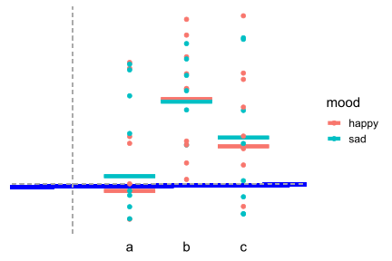
R code: Two-way ANOVA
Now let’s turn to the actual modeling in R. We compare a dedicated ANOVA function (car::Anova; see One-Way ANOVA why) to the linear model (lm). Notice that in ANOVA, we are testing a full factor interaction all at once which involves many parameters (two in this case), so we can’t look at the overall model fit nor any particular parameter for the result. Therefore, I use a likelihood-ratio test to compare a full two-way ANOVA model (“saturated”) to one without the interaction effect(s). The anova function does this test. Even though that looks like cheating, it’s just computing likelihoods, p-values, etc. on the models that were already fitted, so it’s legit!
# Dedicated two-way ANOVA functions
a = car::Anova(aov(value ~ mood * group, D), type='II') # Normal notation. "*" both multiplies and adds main effects
b = car::Anova(aov(value ~ mood + group + mood:group, D)) # Identical but more verbose about main effects and interaction
# Testing the interaction terms as linear model.
full = lm(value ~ 1 + group_b + group_c + mood_happy + group_b:mood_happy + group_c:mood_happy, D) # Full model
null = lm(value ~ 1 + group_b + group_c + mood_happy, D) # Without interaction
c = anova(null, full) # whoop whoop, same F, p, and Dfsa## Anova Table (Type II tests)
##
## Response: value
## Sum Sq Df F value Pr(>F)
## mood 0.105 1 0.0997 0.75335
## group 10.000 2 4.7549 0.01253 *
## mood:group 0.111 2 0.0528 0.94862
## Residuals 56.784 54
## ---
## Signif. codes: 0 '***' 0.001 '**' 0.01 '*' 0.05 '.' 0.1 ' ' 1tidy(a)## # A tibble: 4 × 5
## term sumsq df statistic p.value
## <chr> <dbl> <dbl> <dbl> <dbl>
## 1 mood 0.105 1 0.0997 0.753
## 2 group 10.0 2 4.75 0.0125
## 3 mood:group 0.111 2 0.0528 0.949
## 4 Residuals 56.8 54 NA NAtidy(b)## # A tibble: 4 × 5
## term sumsq df statistic p.value
## <chr> <dbl> <dbl> <dbl> <dbl>
## 1 mood 0.105 1 0.0997 0.753
## 2 group 10.0 2 4.75 0.0125
## 3 mood:group 0.111 2 0.0528 0.949
## 4 Residuals 56.8 54 NA NAResults:
tidy(a)[3:4, ]## # A tibble: 2 × 5
## term sumsq df statistic p.value
## <chr> <dbl> <dbl> <dbl> <dbl>
## 1 mood:group 0.111 2 0.0528 0.949
## 2 Residuals 56.8 54 NA NA(tidy(a)[3,]$`sumsq`/tidy(a)[3,]$df)/(tidy(a)[4,]$`sumsq`/tidy(a)[4,]$df) #F statistic is MSR/MSE## [1] 0.05279774pf((tidy(a)[3,]$`sumsq`/tidy(a)[3,]$df)/(tidy(a)[4,]$`sumsq`/tidy(a)[4,]$df), #P value of F
df1=tidy(a)[3,]$df,
df2=tidy(a)[4,]$df,
lower.tail = FALSE)## [1] 0.9486208summary(full)##
## Call:
## lm(formula = value ~ 1 + group_b + group_c + mood_happy + group_b:mood_happy +
## group_c:mood_happy, data = D)
##
## Residuals:
## Min 1Q Median 3Q Max
## -2.30652 -0.71462 0.02849 0.71542 1.84829
##
## Coefficients:
## Estimate Std. Error t value Pr(>|t|)
## (Intercept) 0.08836 0.32428 0.272 0.7863
## group_b 0.89625 0.45860 1.954 0.0558 .
## group_c 0.46410 0.45860 1.012 0.3161
## mood_happy -0.17672 0.45860 -0.385 0.7015
## group_b:mood_happy 0.20750 0.64855 0.320 0.7503
## group_c:mood_happy 0.07180 0.64855 0.111 0.9123
## ---
## Signif. codes: 0 '***' 0.001 '**' 0.01 '*' 0.05 '.' 0.1 ' ' 1
##
## Residual standard error: 1.025 on 54 degrees of freedom
## Multiple R-squared: 0.1525, Adjusted R-squared: 0.074
## F-statistic: 1.943 on 5 and 54 DF, p-value: 0.1023anova(full)## Analysis of Variance Table
##
## Response: value
## Df Sum Sq Mean Sq F value Pr(>F)
## group_b 1 7.500 7.5000 7.1323 0.009983 **
## group_c 1 2.500 2.5000 2.3774 0.128940
## mood_happy 1 0.105 0.1049 0.0997 0.753352
## group_b:mood_happy 1 0.098 0.0982 0.0933 0.761148
## group_c:mood_happy 1 0.013 0.0129 0.0123 0.912262
## Residuals 54 56.784 1.0516
## ---
## Signif. codes: 0 '***' 0.001 '**' 0.01 '*' 0.05 '.' 0.1 ' ' 1summary(null)##
## Call:
## lm(formula = value ~ 1 + group_b + group_c + mood_happy, data = D)
##
## Residuals:
## Min 1Q Median 3Q Max
## -2.36372 -0.71093 -0.00011 0.67869 1.79109
##
## Coefficients:
## Estimate Std. Error t value Pr(>|t|)
## (Intercept) 0.04181 0.26025 0.161 0.87294
## group_b 1.00000 0.31875 3.137 0.00272 **
## group_c 0.50000 0.31875 1.569 0.12236
## mood_happy -0.08362 0.26025 -0.321 0.74917
## ---
## Signif. codes: 0 '***' 0.001 '**' 0.01 '*' 0.05 '.' 0.1 ' ' 1
##
## Residual standard error: 1.008 on 56 degrees of freedom
## Multiple R-squared: 0.1508, Adjusted R-squared: 0.1053
## F-statistic: 3.315 on 3 and 56 DF, p-value: 0.02632anova(null)## Analysis of Variance Table
##
## Response: value
## Df Sum Sq Mean Sq F value Pr(>F)
## group_b 1 7.500 7.5000 7.3820 0.008749 **
## group_c 1 2.500 2.5000 2.4607 0.122363
## mood_happy 1 0.105 0.1049 0.1032 0.749173
## Residuals 56 56.895 1.0160
## ---
## Signif. codes: 0 '***' 0.001 '**' 0.01 '*' 0.05 '.' 0.1 ' ' 1c## Analysis of Variance Table
##
## Model 1: value ~ 1 + group_b + group_c + mood_happy
## Model 2: value ~ 1 + group_b + group_c + mood_happy + group_b:mood_happy +
## group_c:mood_happy
## Res.Df RSS Df Sum of Sq F Pr(>F)
## 1 56 56.895
## 2 54 56.784 2 0.11104 0.0528 0.9486tidy(c)## # A tibble: 2 × 7
## term df.residual rss df sumsq statistic p.value
## <chr> <dbl> <dbl> <dbl> <dbl> <dbl> <dbl>
## 1 value ~ 1 + group_b + group_… 56 56.9 NA NA NA NA
## 2 value ~ 1 + group_b + group_… 54 56.8 2 0.111 0.0528 0.949(tidy(c)[2,]$`sumsq`/tidy(c)[2,]$df)/(tidy(c)[2,]$`rss`/tidy(c)[2,]$`df.residual`) #F statistic is MSR/MSE## [1] 0.05279774at = tidy(a)[3, ]
at$res.df = tidy(a)[4,]$df
at$rss = tidy(a)[4,]$sumsq
ct = tidy(c)[2, ]
df = bind_rows(at, ct) %>%
mutate(model = c('Anova mood:group', 'lm LRT')) %>%
rename(F = statistic,
res.sumsq = rss) %>%
select(model, F, df, p.value, sumsq, res.sumsq)
print_df(df)a## Anova Table (Type II tests)
##
## Response: value
## Sum Sq Df F value Pr(>F)
## mood 0.105 1 0.0997 0.75335
## group 10.000 2 4.7549 0.01253 *
## mood:group 0.111 2 0.0528 0.94862
## Residuals 56.784 54
## ---
## Signif. codes: 0 '***' 0.001 '**' 0.01 '*' 0.05 '.' 0.1 ' ' 1c## Analysis of Variance Table
##
## Model 1: value ~ 1 + group_b + group_c + mood_happy
## Model 2: value ~ 1 + group_b + group_c + mood_happy + group_b:mood_happy +
## group_c:mood_happy
## Res.Df RSS Df Sum of Sq F Pr(>F)
## 1 56 56.895
## 2 54 56.784 2 0.11104 0.0528 0.9486Below, I present approximate main effect models, though exact calculation of ANOVA main effects is more involved if it is to be accurate and furthermore depend on whether type-II or type-III sum of squares are used for inference.
Look at the model summary statistics to find values comparable to the Anova-estimated main effects above.
# Main effect of group.
e = lm(value ~ 1 + group_b + group_c, D)
# Main effect of mood.
f = lm(value ~ 1 + mood_happy, D)et = glance(e)
et$df = et$df - 1 # see https://github.com/tidymodels/broom/issues/273
ft = glance(f)
ft$df = ft$df - 1 # see https://github.com/tidymodels/broom/issues/273
at = tidy(a)[1:2, ]
df = bind_rows(et, ft, at) %>%
mutate(
model = c('lm', 'lm', 'Anova', 'Anova'),
term = c('group', 'mood', 'mood', 'group')
) %>%
rename(F = statistic) %>%
select(term, model, df, F, p.value) %>%
arrange(term, model)
print_df(df, 5)summary(e)##
## Call:
## lm(formula = value ~ 1 + group_b + group_c, data = D)
##
## Residuals:
## Min 1Q Median 3Q Max
## -2.32191 -0.75274 -0.01108 0.69960 1.83290
##
## Coefficients:
## Estimate Std. Error t value Pr(>|t|)
## (Intercept) 2.293e-16 2.236e-01 0.000 1.00000
## group_b 1.000e+00 3.162e-01 3.162 0.00251 **
## group_c 5.000e-01 3.162e-01 1.581 0.11938
## ---
## Signif. codes: 0 '***' 0.001 '**' 0.01 '*' 0.05 '.' 0.1 ' ' 1
##
## Residual standard error: 1 on 57 degrees of freedom
## Multiple R-squared: 0.1493, Adjusted R-squared: 0.1194
## F-statistic: 5 on 2 and 57 DF, p-value: 0.009984summary(f)##
## Call:
## lm(formula = value ~ 1 + mood_happy, data = D)
##
## Residuals:
## Min 1Q Median 3Q Max
## -1.91504 -0.83722 0.03875 0.86335 2.29109
##
## Coefficients:
## Estimate Std. Error t value Pr(>|t|)
## (Intercept) 0.54181 0.19608 2.763 0.00766 **
## mood_happy -0.08362 0.27729 -0.302 0.76406
## ---
## Signif. codes: 0 '***' 0.001 '**' 0.01 '*' 0.05 '.' 0.1 ' ' 1
##
## Residual standard error: 1.074 on 58 degrees of freedom
## Multiple R-squared: 0.001566, Adjusted R-squared: -0.01565
## F-statistic: 0.09094 on 1 and 58 DF, p-value: 0.7641ANCOVA
This is simply ANOVA with a continuous regressor added so that it now contains continuous and (dummy-coded) categorical predictors. For example, if we continue with the one-way ANOVA example, we can add age and it is now called a one-way ANCOVA:
\[y = \beta_0 + \beta_1 x_1 + \beta_2 x_2 + ... + \beta_3 age\]
… where \(x_i\) are our usual dummy-coded indicator variables. \(\beta_0\) is now the mean for the first group at \(age=0\). You can turn all ANOVAs into ANCOVAs this way, e.g. by adding \(\beta_N \cdot age\) to our two-way ANOVA in the previous section. But let us go ahead with our one-way ANCOVA, starting by adding \(age\) to our dataset:
D## value group group_b group_c mood mood_happy
## 1 -1.351387612 a 0 0 happy 1
## 2 -1.373227623 a 0 0 sad 0
## 3 1.455799673 a 0 0 happy 1
## 4 -1.269454417 a 0 0 sad 0
## 5 1.385205392 a 0 0 happy 1
## 6 1.366253481 a 0 0 sad 0
## 7 -0.843083252 a 0 0 happy 1
## 8 -0.278988443 a 0 0 sad 0
## 9 0.483213416 a 0 0 happy 1
## 10 -0.141556320 a 0 0 sad 0
## 11 -0.003587294 a 0 0 happy 1
## 12 1.434767265 a 0 0 sad 0
## 13 -1.392672920 a 0 0 happy 1
## 14 1.054200684 a 0 0 sad 0
## 15 0.565283008 a 0 0 happy 1
## 16 0.601531344 a 0 0 sad 0
## 17 -0.428312886 a 0 0 happy 1
## 18 -0.086688261 a 0 0 sad 0
## 19 -0.754055855 a 0 0 happy 1
## 20 -0.423239381 a 0 0 sad 0
## 21 1.142965432 b 1 0 happy 1
## 22 0.884986296 b 1 0 sad 0
## 23 1.973887747 b 1 0 happy 1
## 24 -1.321912166 b 1 0 sad 0
## 25 1.319526554 b 1 0 happy 1
## 26 -0.881763131 b 1 0 sad 0
## 27 1.135739419 b 1 0 happy 1
## 28 1.115869346 b 1 0 sad 0
## 29 1.523397694 b 1 0 happy 1
## 30 0.464313447 b 1 0 sad 0
## 31 0.510657926 b 1 0 happy 1
## 32 1.300006873 b 1 0 sad 0
## 33 0.465655671 b 1 0 happy 1
## 34 2.832899449 b 1 0 sad 0
## 35 0.049714455 b 1 0 happy 1
## 36 2.272449898 b 1 0 sad 0
## 37 0.247702501 b 1 0 happy 1
## 38 1.682094352 b 1 0 sad 0
## 39 1.784635899 b 1 0 happy 1
## 40 1.497172336 b 1 0 sad 0
## 41 0.222672380 c 0 1 happy 1
## 42 0.033992783 c 0 1 sad 0
## 43 0.419742661 c 0 1 happy 1
## 44 -0.364360978 c 0 1 sad 0
## 45 0.570367796 c 0 1 happy 1
## 46 1.751820641 c 0 1 sad 0
## 47 1.327580716 c 0 1 happy 1
## 48 1.733607128 c 0 1 sad 0
## 49 -0.275314235 c 0 1 happy 1
## 50 0.878910401 c 0 1 sad 0
## 51 2.016340712 c 0 1 happy 1
## 52 2.267185958 c 0 1 sad 0
## 53 -1.242889759 c 0 1 happy 1
## 54 -0.159415943 c 0 1 sad 0
## 55 1.252114637 c 0 1 happy 1
## 56 -0.364041061 c 0 1 sad 0
## 57 -0.733858093 c 0 1 happy 1
## 58 -0.734512470 c 0 1 sad 0
## 59 0.918631853 c 0 1 happy 1
## 60 0.481424873 c 0 1 sad 0nrow(D)## [1] 60rnorm_fixed(nrow(D), sd = 3)## [,1]
## [1,] 0.08915962
## [2,] 0.94910164
## [3,] -3.82568438
## [4,] -0.62858973
## [5,] 7.92800847
## [6,] 1.39845988
## [7,] -1.79942547
## [8,] -1.25298164
## [9,] 1.01056525
## [10,] 3.80594472
## [11,] 2.78456252
## [12,] -7.13985523
## [13,] -3.51446735
## [14,] 2.06513177
## [15,] 0.20324444
## [16,] 0.96473965
## [17,] -1.18023006
## [18,] 2.90228521
## [19,] 2.43330741
## [20,] -2.40464509
## [21,] 1.90912797
## [22,] -1.13791569
## [23,] 0.57918976
## [24,] -0.52302230
## [25,] 1.42020175
## [26,] -0.83451575
## [27,] 2.94604496
## [28,] -3.16202627
## [29,] 0.87431089
## [30,] -3.95958089
## [31,] 0.09943368
## [32,] 3.01096508
## [33,] 4.89221372
## [34,] 2.27201969
## [35,] 0.66176877
## [36,] 1.14917217
## [37,] 0.75566450
## [38,] -3.67861385
## [39,] 4.81344377
## [40,] 2.55241506
## [41,] -3.25170953
## [42,] 0.05352314
## [43,] 1.37062592
## [44,] -2.00024035
## [45,] 2.57644784
## [46,] -7.07458409
## [47,] 5.33877219
## [48,] -1.23944603
## [49,] -6.61729709
## [50,] 1.21069025
## [51,] 0.24701188
## [52,] 1.31596239
## [53,] 0.85349866
## [54,] 0.72477884
## [55,] -0.47091624
## [56,] -3.47241185
## [57,] 0.05124527
## [58,] -5.07978008
## [59,] -3.92771118
## [60,] -0.03738856
## attr(,"scaled:center")
## [1] 0.05281647
## attr(,"scaled:scale")
## [1] 0.7798746D$value## [1] -1.351387612 -1.373227623 1.455799673 -1.269454417 1.385205392
## [6] 1.366253481 -0.843083252 -0.278988443 0.483213416 -0.141556320
## [11] -0.003587294 1.434767265 -1.392672920 1.054200684 0.565283008
## [16] 0.601531344 -0.428312886 -0.086688261 -0.754055855 -0.423239381
## [21] 1.142965432 0.884986296 1.973887747 -1.321912166 1.319526554
## [26] -0.881763131 1.135739419 1.115869346 1.523397694 0.464313447
## [31] 0.510657926 1.300006873 0.465655671 2.832899449 0.049714455
## [36] 2.272449898 0.247702501 1.682094352 1.784635899 1.497172336
## [41] 0.222672380 0.033992783 0.419742661 -0.364360978 0.570367796
## [46] 1.751820641 1.327580716 1.733607128 -0.275314235 0.878910401
## [51] 2.016340712 2.267185958 -1.242889759 -0.159415943 1.252114637
## [56] -0.364041061 -0.733858093 -0.734512470 0.918631853 0.481424873# Update data with a continuous covariate
D$age = D$value + rnorm_fixed(nrow(D), sd = 3) # Correlated to valueThis is best visualized using colors for groups instead of x-position. The \(\beta\)s are still the average \(y\)-offset of the data points, only now we model each group using a slope instead of an intercept. In other words, the one-way ANOVA is sort of one-sample t-tests model for each group (\(y = \beta_0\)) while the one-way ANCOVA is sort of Pearson correlation model for each group (\(y_i = \beta_0 + \beta_i + \beta_1 \cdot age\)):
# For linear model plot
D$pred = predict(lm(value ~ age + group, D))
# Plot
P_ancova = ggplot(D, aes(x=age, y=value, color=group, shape=group)) +
geom_line(aes(y=pred), lwd=2)
# Theme it
theme_axis(P_ancova, xlim=NULL, ylim=NULL, legend.position=c(0.8, 0.2)) + theme(axis.title=element_text())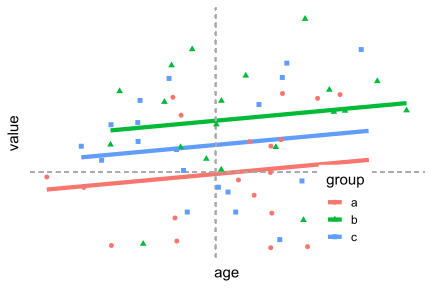
And now some R code to run the one-way ANCOVA as a linear model:
# Dedicated ANCOVA functions. The order of factors matter in pure-aov (type-I variance).
# Use type-II (default for car::Anova) or type-III (set type=3),
a = car::Anova(aov(value ~ group + age, D))
#a = aov(value ~ group + age, D) # Predictor order matters. Not nice!
# As dummy-coded linear model.
full = lm(value ~ 1 + group_b + group_c + age, D)
# Testing main effect of age using Likelihood-ratio test
null_age = lm(value ~ 1 + group_b + group_c, D) # Full without age. One-way ANOVA!
result_age = anova(null_age, full)
# Testing main effect of groupusing Likelihood-ratio test
null_group = lm(value ~ 1 + age, D) # Full without group. Pearson correlation!
result_group = anova(null_group, full)Results:
at = tidy(a)[1:2,]
at$rss = a$`Sum Sq`[3]
at$res.df = a$Df[3]
groupt = tidy(result_group)[2, ]
aget = tidy(result_age)[2,]
df = bind_rows(at, groupt, aget) %>%
mutate(
model=rep(c('Anova', 'lm'), each=2),
term = c('group', 'age', 'group', 'age')
) %>%
rename(
F = statistic,
res.sumsq = rss
) %>%
select(term, model, F, df, p.value, sumsq, everything()) %>%
arrange(term)
print_df(df)a## Anova Table (Type II tests)
##
## Response: value
## Sum Sq Df F value Pr(>F)
## group 9.676 2 4.8555 0.01136 *
## age 1.204 1 1.2087 0.27628
## Residuals 55.796 56
## ---
## Signif. codes: 0 '***' 0.001 '**' 0.01 '*' 0.05 '.' 0.1 ' ' 1result_age## Analysis of Variance Table
##
## Model 1: value ~ 1 + group_b + group_c
## Model 2: value ~ 1 + group_b + group_c + age
## Res.Df RSS Df Sum of Sq F Pr(>F)
## 1 57 57.000
## 2 56 55.796 1 1.2043 1.2087 0.2763result_group## Analysis of Variance Table
##
## Model 1: value ~ 1 + age
## Model 2: value ~ 1 + group_b + group_c + age
## Res.Df RSS Df Sum of Sq F Pr(>F)
## 1 58 65.471
## 2 56 55.796 2 9.6756 4.8555 0.01136 *
## ---
## Signif. codes: 0 '***' 0.001 '**' 0.01 '*' 0.05 '.' 0.1 ' ' 1Is there a well-known “non-parametric” ANCOVA? No, but now that we understand it as a mix of a Pearson correlation and t-tests, you can get creative and make one up. If we rank the \(y\) and the \(x\) we get a Spearman correlation (\(rank(y) ~ \beta_0 + rank(x)\)) and at the same time the Wilcoxon ($rank(y) ~ 1):
\[rank(y) = \beta_0 + \beta_1 x_1 + \beta_2 x_2 + ... + \beta_3 rank(age)\]
As I noted earlier, this does not match up perfectly with the true “non-parametric” model (if that exists), but it can be very close!
full = lm(rank(value) ~ group + rank(age), D)
null = lm(rank(value) ~ rank(age), D)
anova(null, full)## Analysis of Variance Table
##
## Model 1: rank(value) ~ rank(age)
## Model 2: rank(value) ~ group + rank(age)
## Res.Df RSS Df Sum of Sq F Pr(>F)
## 1 58 17663
## 2 56 15164 2 2499.1 4.6146 0.01396 *
## ---
## Signif. codes: 0 '***' 0.001 '**' 0.01 '*' 0.05 '.' 0.1 ' ' 1#sm::sm.ancova(x=D$age, y=D$value, group=D$group, display='none', model='equal')Proportions: Chi-square is a log-linear model
Recall that when you take the logarithm, you can easily make statements about proportions, i.e., that for every increase in \(x\), \(y\) increases a certain percentage. This turns out to be one of the simplest (and therefore best!) ways to make count data and contingency tables intelligible.
Goodness of fit
Theory: As log-linear model
Model: a single intercept predicts \(log(y)\).
I’ll refer you to take a look at the section on contingency tables which is basically a “two-way goodness of fit”.
Before log-transforming, this is a one-way ANOVA:
\[y = \beta_1*x_1 + \beta_2*x_2 + \beta_3*x_3 +... \qquad \mathcal{H}_0: y = \beta_1\]
We should think of these as proportions of \(sum(y)\) for reasons that will be clearer in the section on contingency tables:
\[y = N\beta_1*x_1/N + N\beta_2*x_2/N + N\beta_3*x_3/N + ...\]
But we fit parameters on the log_transformed model (ignoring the proportion-notation for now):
\[log(y) = log(\beta_1*x_1 + \beta_2*x_2 + \beta_3*x_3 +...) \qquad \mathcal{H}_0: log(y) = log(\beta_1)\]
\[log(y) = log(N\beta_1*x_1/N + N)\]
Example data
For this, we need some wide count data:
# Data in long format
D = data.frame(mood = c('happy', 'sad', 'meh'),
counts = c(60, 90, 70))
# Dummy coding for the linear model
D$mood_happy = ifelse(D$mood == 'happy', 1, 0)
D$mood_sad = ifelse(D$mood == 'sad', 1, 0)
print_df(D)R code: Goodness of fit
Now let’s see that the Goodness of fit is just a log-linear equivalent to a one-way ANOVA. We set family = poisson() which defaults to setting a logarithmic link function (family = poisson(link='log')).
# Built-in test
a = chisq.test(D$counts)
# As log-linear model, comparing to an intercept-only model
full = glm(counts ~ 1 + mood_happy + mood_sad, data = D, family = poisson())
null = glm(counts ~ 1, data = D, family = poisson())
b = anova(null, full, test = 'Rao')
# Note: glm can also do the dummy coding for you:
c = glm(counts ~ mood, data = D, family = poisson())a##
## Chi-squared test for given probabilities
##
## data: D$counts
## X-squared = 6.3636, df = 2, p-value = 0.04151b## Analysis of Deviance Table
##
## Model 1: counts ~ 1
## Model 2: counts ~ 1 + mood_happy + mood_sad
## Resid. Df Resid. Dev Df Deviance Rao Pr(>Chi)
## 1 2 6.2697
## 2 0 0.0000 2 6.2697 6.3636 0.04151 *
## ---
## Signif. codes: 0 '***' 0.001 '**' 0.01 '*' 0.05 '.' 0.1 ' ' 1c##
## Call: glm(formula = counts ~ mood, family = poisson(), data = D)
##
## Coefficients:
## (Intercept) moodmeh moodsad
## 4.0943 0.1542 0.4055
##
## Degrees of Freedom: 2 Total (i.e. Null); 0 Residual
## Null Deviance: 6.27
## Residual Deviance: -2.22e-15 AIC: 24.36full##
## Call: glm(formula = counts ~ 1 + mood_happy + mood_sad, family = poisson(),
## data = D)
##
## Coefficients:
## (Intercept) mood_happy mood_sad
## 4.2485 -0.1542 0.2513
##
## Degrees of Freedom: 2 Total (i.e. Null); 0 Residual
## Null Deviance: 6.27
## Residual Deviance: -1.066e-14 AIC: 24.36summary(full)##
## Call:
## glm(formula = counts ~ 1 + mood_happy + mood_sad, family = poisson(),
## data = D)
##
## Coefficients:
## Estimate Std. Error z value Pr(>|z|)
## (Intercept) 4.2485 0.1195 35.545 <2e-16 ***
## mood_happy -0.1542 0.1759 -0.876 0.381
## mood_sad 0.2513 0.1594 1.577 0.115
## ---
## Signif. codes: 0 '***' 0.001 '**' 0.01 '*' 0.05 '.' 0.1 ' ' 1
##
## (Dispersion parameter for poisson family taken to be 1)
##
## Null deviance: 6.2697e+00 on 2 degrees of freedom
## Residual deviance: -1.0658e-14 on 0 degrees of freedom
## AIC: 24.363
##
## Number of Fisher Scoring iterations: 2null##
## Call: glm(formula = counts ~ 1, family = poisson(), data = D)
##
## Coefficients:
## (Intercept)
## 4.295
##
## Degrees of Freedom: 2 Total (i.e. Null); 2 Residual
## Null Deviance: 6.27
## Residual Deviance: 6.27 AIC: 26.63summary(null)##
## Call:
## glm(formula = counts ~ 1, family = poisson(), data = D)
##
## Coefficients:
## Estimate Std. Error z value Pr(>|z|)
## (Intercept) 4.29502 0.06742 63.7 <2e-16 ***
## ---
## Signif. codes: 0 '***' 0.001 '**' 0.01 '*' 0.05 '.' 0.1 ' ' 1
##
## (Dispersion parameter for poisson family taken to be 1)
##
## Null deviance: 6.2697 on 2 degrees of freedom
## Residual deviance: 6.2697 on 2 degrees of freedom
## AIC: 26.633
##
## Number of Fisher Scoring iterations: 4Let’s look at the results:
df = data.frame(
model = c('chisq.test', 'glm LRT'),
Chisq = c(a$statistic, b$Rao[2]),
df = c(a$parameter, b$Df[2]),
p.value = c(a$p.value, b$`Pr(>Chi)`[2])
)
print_df(df)a##
## Chi-squared test for given probabilities
##
## data: D$counts
## X-squared = 6.3636, df = 2, p-value = 0.04151b## Analysis of Deviance Table
##
## Model 1: counts ~ 1
## Model 2: counts ~ 1 + mood_happy + mood_sad
## Resid. Df Resid. Dev Df Deviance Rao Pr(>Chi)
## 1 2 6.2697
## 2 0 0.0000 2 6.2697 6.3636 0.04151 *
## ---
## Signif. codes: 0 '***' 0.001 '**' 0.01 '*' 0.05 '.' 0.1 ' ' 1Note the strange anova(..., test='Rao') which merely states that p-values should be computed using the (Rao) score test. We could also have jotted in test='Chisq' or test='LRT' which would have yielded approximate p-values. You may think that we’re cheating here, sneaking in some sort of Chi-Square model post-hoc. However, anova only specifies how p-values are calculated whereas all the log-linear modeling happened in glm.
By the way, if there are only two counts and a large sample size (N > 100), this model begins to approximate the binomial test, binom.test, to a reasonable degree. But this sample size is larger than most use cases, so I won’t raise to a rule-of-thumb and won’t dig deeper into it here.
Contingency tables
Theory: As log-linear model
The theory here will be a bit more convoluted, and I mainly write it up so that you can get the feeling that it really is just a log-linear two-way ANOVA model. Let’s get started…
For a two-way contingency table, the model of the count variable \(y\) is a modeled using the marginal proportions of a contingency table. Why this makes sense, is too involved to go into here, but see the relevant slides by Christoph Scheepers here for an excellent exposition. The model is composed of a lot of counts and the regression coefficients \(A_i\) and \(B_i\):
\[y_i = N \cdot x_i(A_i/N) \cdot z_j(B_j/N) \cdot x_{ij}/((A_i x_i)/(B_j z_j)/N)\]
What a mess!!! Here, \(i\) is the row index, \(j\) is the column index, \(x_{something}\) is the sum of that row and/or column, \(N = sum(y)\). Remember that \(y\) is a count variable, so \(N\) is just the total count.
We can simplify the notation by defining the proportions: \(\alpha_i = x_i(A_i/N)\), \(\beta_i = x_j(B_i/N)\) and \(\alpha_i\beta_j = x_{ij}/(A_i x_i)/(B_j z_j)/N\). Let’s write the model again:
\[y_i = N \cdot \alpha_i \cdot \beta_j \cdot \alpha_i\beta_j\]
Ah, much prettier. However, there is still lot’s of multiplication which makes it hard to get an intuition about how the actual numbers interact. We can make it much more intelligible when we remember that \(log(A \cdot B) = log(A) + log(B)\). Doing logarithms on both sides, we get:
\[log(y_i) = log(N) + log(\alpha_i) + log(\beta_j) + log(\alpha_i\beta_j)\]
Snuggly! Now we can get a better grasp on how the regression coefficients (which are proportions) independently contribute to \(y\). This is why logarithms are so nice for proportions. Note that this is just the two-way ANOVA model with some logarithms added, so we are back to our good old linear models - only the interpretation of the regression coefficients have changed! And we cannot use lm anymore in R.
Example data
Here we need some long data and we need it in table format for chisq.test:
# Contingency data in long format for linear model
D = data.frame(
mood = c('happy', 'happy', 'meh', 'meh', 'sad', 'sad'),
sex = c('male', 'female', 'male', 'female', 'male', 'female'),
Freq = c(100, 70, 30, 32, 110, 120)
)
# ... and as table for chisq.test
D_table = D %>%
spread(key = mood, value = Freq) %>% # Mood to columns
select(-sex) %>% # Remove sex column
as.matrix()
# Dummy coding of D for linear model (skipping mood=="sad" and gender=="female")
# We could also use model.matrix(D$Freq~D$mood*D$sex)
D$mood_happy = ifelse(D$mood == 'happy', 1, 0)
D$mood_meh = ifelse(D$mood == 'meh', 1, 0)
D$sex_male = ifelse(D$sex == 'male', 1, 0)print_df(D)R code: Chi-square test
Now let’s show the equivalence between a chi-square model and a log-linear model. This is very similar to our two-way ANOVA above:
# Built-in chi-square. It requires matrix format.
a = chisq.test(D_table)
# Using glm to do a log-linear model, we get identical results when testing the interaction term:
full = glm(Freq ~ 1 + mood_happy + mood_meh + sex_male + mood_happy*sex_male + mood_meh*sex_male, data = D, family = poisson())
null = glm(Freq ~ 1 + mood_happy + mood_meh + sex_male, data = D, family = poisson())
b = anova(null, full, test = 'Rao') # Could also use test='LRT' or test='Chisq'
# Note: let glm do the dummy coding for you
full = glm(Freq ~ mood * sex, family = poisson(), data = D)
c = anova(full, test = 'Rao')
# Note: even simpler syntax using MASS:loglm ("log-linear model")
d = MASS::loglm(Freq ~ mood + sex, D)df = data.frame(
model = c('chisq.test', 'glm', 'loglm'),
Chisq = c(a$statistic, b$Rao[2], d$pearson),
df = c(a$parameter, b$Df[2], d$df),
p.value = c(a$p.value, b$`Pr(>Chi)`[2], summary(d)$tests[2, 3])
)
print_df(df)a##
## Pearson's Chi-squared test
##
## data: D_table
## X-squared = 5.0999, df = 2, p-value = 0.07809b## Analysis of Deviance Table
##
## Model 1: Freq ~ 1 + mood_happy + mood_meh + sex_male
## Model 2: Freq ~ 1 + mood_happy + mood_meh + sex_male + mood_happy * sex_male +
## mood_meh * sex_male
## Resid. Df Resid. Dev Df Deviance Rao Pr(>Chi)
## 1 2 5.1199
## 2 0 0.0000 2 5.1199 5.0999 0.07809 .
## ---
## Signif. codes: 0 '***' 0.001 '**' 0.01 '*' 0.05 '.' 0.1 ' ' 1c## Analysis of Deviance Table
##
## Model: poisson, link: log
##
## Response: Freq
##
## Terms added sequentially (first to last)
##
##
## Df Deviance Resid. Df Resid. Dev Rao Pr(>Chi)
## NULL 5 111.130
## mood 2 105.308 3 5.821 94.132 < 2e-16 ***
## sex 1 0.701 2 5.120 0.701 0.40235
## mood:sex 2 5.120 0 0.000 5.100 0.07809 .
## ---
## Signif. codes: 0 '***' 0.001 '**' 0.01 '*' 0.05 '.' 0.1 ' ' 1d## Call:
## MASS::loglm(formula = Freq ~ mood + sex, data = D)
##
## Statistics:
## X^2 df P(> X^2)
## Likelihood Ratio 5.119915 2 0.07730804
## Pearson 5.099859 2 0.07808717summary(full)##
## Call:
## glm(formula = Freq ~ mood * sex, family = poisson(), data = D)
##
## Coefficients:
## Estimate Std. Error z value Pr(>|z|)
## (Intercept) 4.2485 0.1195 35.545 < 2e-16 ***
## moodmeh -0.7828 0.2134 -3.668 0.000244 ***
## moodsad 0.5390 0.1504 3.584 0.000339 ***
## sexmale 0.3567 0.1558 2.289 0.022094 *
## moodmeh:sexmale -0.4212 0.2981 -1.413 0.157670
## moodsad:sexmale -0.4437 0.2042 -2.172 0.029819 *
## ---
## Signif. codes: 0 '***' 0.001 '**' 0.01 '*' 0.05 '.' 0.1 ' ' 1
##
## (Dispersion parameter for poisson family taken to be 1)
##
## Null deviance: 1.1113e+02 on 5 degrees of freedom
## Residual deviance: 3.9968e-15 on 0 degrees of freedom
## AIC: 48.254
##
## Number of Fisher Scoring iterations: 3pchisq(5.0999, df = 2, lower.tail = FALSE)## [1] 0.07808557If you unfold the raw R output, I’ve included summary(full) so that you can see the raw regression coefficients. Being a log-linear model, these are the percentage increasein \(y\) over and above the intercept if that category obtains.
Sources and further equivalences
Here are links to other sources who have exposed bits and pieces of this puzzle, including many further equivalences not covered here:
- My original exposition of the idea at Cross Validated
- An earlier question by me about non-parametric tests and a helpful answer.
- This question and replies on t-tests and ANOVA at StackOverflow
- These slides by Christoph Scheepers on Chi-Square as log-linear models.
- This notebook by Philip M. Alday on Chi-square, binomial, multinomial, and poisson tests as log-linear and logistic models. These “equivalences” are less exact than what I presented above, and were therefore not included here. They are still great for a conceptual understanding of these tests, though!
- This article by Kristoffer Magnusson on RM-ANOVA and growth models using
lme4::lmermixed models. - This post by Thom Baguley on the Friedman test. That post was actually the one that inititated my exploration of linear equivalences to “non-parametric”” tests which ultimately pushed me over the edge to write up the present article.
Fundamentals of regression:
Recall from high-school: \(y = a \cdot x + b\), and getting a really good intuition about slopes and intercepts. Understanding that this can be written using all variable names, e.g.,
money = profit * time + starting_moneyor \(y = \beta_1x + \beta_2*1\) or, suppressing the coefficients, asy ~ x + 1. If the audience is receptive, convey the idea of these models as a solution to differential equations, specifying how \(y\) changes with \(x\).Extend to a few multiple regression as models. Make sure to include plenty of real-life examples and exercises at this point to make all of this really intuitive. Marvel at how briefly these models allow us to represent large datasets.
Introduce the idea of rank-transforming non-metric data and try it out.
Teach the three assumptions: independence of data points, normality of residuals, and homoscedasticity.
Confidence/credible intervals on the parameters. Stress that the Maximum-Likelihood estimate is extremely unlikely, so intervals are more important.
Briefly introduce \(R^2\) for the simple regression models above. Mention in passing that this is called the Pearson and Spearman correlation coefficients.
Special case #1: One or two means (t-tests, Wilcoxon, Mann-Whitney):
One mean: When there is only one x-value, the regression model simplifies to \(y = b\). If \(y\) is non-metric, you can rank-transform it. Apply the assumptions (homoscedasticity doesn’t apply since there is only one \(x\)). Mention in passing that these intercept-only models are called one-sample t-test and Wilcoxon Signed Rank test respectively.
Two means: If we put two variables 1 apart on the x-axis, the difference between the means is the slope. Great! It is accessible to our swizz army knife called linear modeling. Apply the assumption checks to see that homoscedasticity reduces to equal variance between groups. This is called an independent t-test. Do a few worked examples and exercises, maybe adding Welch’s test, and do the rank-transformed version, called Mann-Whitney U.
Paired samples: Violates the independence assumption. After computing pairwise differences, this is equivalent to 2.1 (one intercept), though it is called the paired t-test and Wilcoxon’s matched pairs.
Special case #2: Three or more means (ANOVAs)
Dummy coding of categories: How one regression coefficient for each level of a factor models an intercept for each level when multiplied by a binary indicator. This is just extending what we did in 2.1. to make this data accessible to linear modeling.
Means of one variable: One-way ANOVA.
Means of two variables: Two-way ANOVA.
Special case #3: Three or more proportions (Chi-Square)
Logarithmic transformation: Making multiplicative models linear using logarithms, thus modeling proportions. See this excellent introduction to the equivalence of log-linear models and Chi-Square tests as models of proportions. Also needs to introduce (log-)odds ratios. When the multiplicative model is made summative using logarithms, we just add the dummy-coding trick from 3.1, and see that the models are identical to the ANOVA models in 3.2 and 3.3, only the interpretation of the coefficients have changed.
Proportions of one variable: Goodness of fit.
Proportions of two variables: Contingency tables.
Hypothesis testing:
Hypothesis testing as model comparisons: Hypothesis testing is the act of choosing between a full model and one where a parameter is fixed to a particular value (often zero, i.e., effectively excluded from the model) instead of being estimated. For example, when fixing one of the two means to zero in the t-test, we study how well a single mean (a one-sample t-test) explains all the data from both groups. If it does a good job, we prefer this model over the two-mean model because it is simpler. So hypothesis testing is just comparing linear models to make more qualitative statements than the truly quantitative statements which were covered in bullets 1-4 above. As tests of single parameters, hypothesis testing is therefore less informative However, when testing multiple parameters at the same time (e.g., a factor in ANOVA), model comparison becomes invaluable.
Likelihood ratios: Likelihood ratios are the swizz army knife which will do model comparison all the way from the one-sample t-test to GLMMs. BIC penalizes model complexity. Moreover, add priors and you’ve got Bayes Factors. One tool, and you’re done. I’ve used LRTs in the ANOVAs above.
# Plot style for icons in table
theme_icon = function(P, jitter=FALSE, xlim=c(-0.5, 2), ylim=c(-0.5, 2)) {
P = P + theme_bw(15) +
coord_cartesian(xlim=xlim, ylim=ylim) +
theme(axis.title = element_blank(),
axis.text = element_blank(),
axis.ticks = element_blank(),
title = element_blank(),
text = element_blank(),
panel.border = element_blank(),
panel.grid = element_blank(),
legend.position = 'none',
legend.key=element_blank())
# Return jittered or non-jittered plot?
if(jitter) {
P + geom_jitter(width=0.1, size=2)
}
else {
P + geom_point(size=2)
}
}
P_t1_icon = ggplot(D_t1, aes(y=y, x=0)) +
stat_summary(fun.y=mean, geom = "errorbar", color='blue', aes(ymax = ..y.., ymin = ..y..), lwd=2)
theme_icon(P_t1_icon, jitter=TRUE)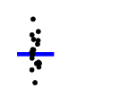
theme_icon(P_pearson)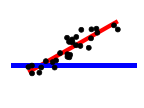
#theme_icon(P_t1)
theme_icon(P_tpaired)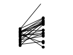
theme_icon(P_t2, jitter=TRUE)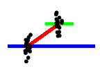
theme_icon(P_anova1, xlim=c(-0.5, 4), jitter=TRUE)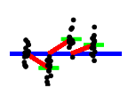
theme_icon(P_ancova, xlim=NULL, ylim=NULL)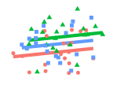
Explicit GLM(M) Equivalents for Standard Tests
https://rpubs.com/palday/glm-test
- the relationship between ANOVA and the t-test
- the relationship betweenthe t-test and simple linear regression
- repeated-measures ANOVA is just a special case of the mixed model with certain assumptions about the random effects (sphericity and only one variance component).
For the other models and tests, it makes sense to start with the fixed-effects (i.e. not mixed) models until we’re used to dealing with them. The mixed-effects models are a relatively straightforward extension, so we’ll just leave them alone for now. A lot of the frequenstist examples here were inspired by Bayesian examples from Rasmus Bååth and his Bayesian First Aid package. It’s good work, but I would prefer estimation to testing, so I have mixed feelings about displaying the models as tests.
Beyond the “estimating is better than testing” perspective and the difficulties of finding repeated-measures equivalents for a lot of these tests, there is anohter advantage: the explicit GLM-based modeling strategy allows for continuous predictors, while many classical tests do not.
For a lot of the examples today, we’ll be using the survey data from the MASS package.
library(MASS)
library(car)
# use ANOVA-style contrasts
options(contrasts=c("contr.Sum", "contr.poly"))
library(tidyverse)\(\chi^2\)-Test : Poisson Model
Classical Test: \(\chi^2\)-Test of Independence
smoke_exercise <- table(Smoke=survey$Smoke, Exer=survey$Exer)
smoke_exercise## Exer
## Smoke Freq None Some
## Heavy 7 1 3
## Never 87 18 84
## Occas 12 3 4
## Regul 9 1 7smoke_exercise.chisq <- chisq.test(smoke_exercise, correct=FALSE)
print(smoke_exercise.chisq)##
## Pearson's Chi-squared test
##
## data: smoke_exercise
## X-squared = 5.4885, df = 6, p-value = 0.4828the \(\chi^2\) is the sum of squared residuals:
sum(smoke_exercise.chisq$residuals^2)## [1] 5.488546We are unable to reject the null hypothesis. But that doesn’t tell us much. The chisq.test actually gives a lot more information than most people realize.
The observed data:
smoke_exercise.chisq$observed## Exer
## Smoke Freq None Some
## Heavy 7 1 3
## Never 87 18 84
## Occas 12 3 4
## Regul 9 1 7The expected results based on the null model:
\[expected_{i.j}=\frac{rowsum_i}{N}\frac{colsum_j}{N}*N\]
sum(smoke_exercise.chisq$observed)## [1] 236sum(smoke_exercise.chisq$observed[1,])## [1] 11sum(smoke_exercise.chisq$observed[,1])## [1] 115(sum(smoke_exercise.chisq$observed[1,])/sum(smoke_exercise.chisq$observed))*(sum(smoke_exercise.chisq$observed[,1])/sum(smoke_exercise.chisq$observed)*sum(smoke_exercise.chisq$observed))## [1] 5.360169smoke_exercise.chisq$expected## Exer
## Smoke Freq None Some
## Heavy 5.360169 1.072034 4.567797
## Never 92.097458 18.419492 78.483051
## Occas 9.258475 1.851695 7.889831
## Regul 8.283898 1.656780 7.059322And the Pearson residuals ( (observed - expected) / sqrt(expected) )
expected <- (sum(smoke_exercise.chisq$observed[1,])/sum(smoke_exercise.chisq$observed))*(sum(smoke_exercise.chisq$observed[,1])/sum(smoke_exercise.chisq$observed)*sum(smoke_exercise.chisq$observed))
observed <- smoke_exercise.chisq$observed[1,1]
(observed - expected) / sqrt(expected)## [1] 0.7082877smoke_exercise.chisq$residuals## Exer
## Smoke Freq None Some
## Heavy 0.70828770 -0.06957171 -0.73356118
## Never -0.53116543 -0.09774271 0.62274614
## Occas 0.90099537 0.84386422 -1.38483121
## Regul 0.24880398 -0.51025506 -0.02232721smoke_exercise.chisq$observed - smoke_exercise.chisq$expected## Exer
## Smoke Freq None Some
## Heavy 1.63983051 -0.07203390 -1.56779661
## Never -5.09745763 -0.41949153 5.51694915
## Occas 2.74152542 1.14830508 -3.88983051
## Regul 0.71610169 -0.65677966 -0.05932203Looking at the differences and the standardized residuals (which are somewhat analogous to z -scores), it’s no surprise that we can’t reject the null hypothesis.
Explicit GLM Test: Poisson
But I’ve always found the \(\chi^2\)-test confusing for anything but the simplest designs – a significant result suggest that there’s a difference somewhere, but where? I find it much easier to reason in terms of which things actually make a difference and what that difference looks like. We can do that by using the GLM explicitly.
The Poisson distribution is often used for modelling count data. There are some issues with Poisson models for data with too many zeros (so-called Zero-Inflated Poissons or ZIP) or for data where the variance is too (overdispersion), but we’ll leave those issues alone for today.
The basic Poisson model for our data is easy to compute, but first we need to get our data in the right format:
smoke_exercise## Exer
## Smoke Freq None Some
## Heavy 7 1 3
## Never 87 18 84
## Occas 12 3 4
## Regul 9 1 7dat <- as.data.frame(smoke_exercise)
dat## Smoke Exer Freq
## 1 Heavy Freq 7
## 2 Never Freq 87
## 3 Occas Freq 12
## 4 Regul Freq 9
## 5 Heavy None 1
## 6 Never None 18
## 7 Occas None 3
## 8 Regul None 1
## 9 Heavy Some 3
## 10 Never Some 84
## 11 Occas Some 4
## 12 Regul Some 7dat[dat$Smoke == 'Heavy',]## Smoke Exer Freq
## 1 Heavy Freq 7
## 5 Heavy None 1
## 9 Heavy Some 3Note that the the \(Freq\) column refers to the number of “matches” for a particular combination of smoker type Smoke and excercise regularity \(Exer\) and is not to be confused with the entry \(Freq\) in the \(Exer\) column, which refers to frequent exercise.
The model itself is for predicting how often we observe a particular combination of \(Smoke\) and \(Exer\), so they form our predictors and \(Freq\) forms our prediction. We use the “over-parameterized” version of the model without an intercept so that each category is explicit and no category is “hidden” in the intercept.
smoke_exercise.glm <- glm(Freq ~ 0 + Smoke * Exer, data=dat, family=poisson())
summary(smoke_exercise.glm)##
## Call:
## glm(formula = Freq ~ 0 + Smoke * Exer, family = poisson(), data = dat)
##
## Coefficients:
## Estimate Std. Error z value Pr(>|z|)
## SmokeHeavy 1.01484 0.40499 2.506 0.012217 *
## SmokeNever 3.92903 0.09366 41.949 < 2e-16 ***
## SmokeOccas 1.65660 0.27217 6.087 1.15e-09 ***
## SmokeRegul 1.38104 0.37327 3.700 0.000216 ***
## Exer[S.Freq] 0.77811 0.17721 4.391 1.13e-05 ***
## Exer[S.None] -0.99813 0.27186 -3.672 0.000241 ***
## Smoke[S.Heavy]:Exer[S.Freq] 0.15296 0.37044 0.413 0.679662
## Smoke[S.Never]:Exer[S.Freq] -0.24123 0.19418 -1.242 0.214124
## Smoke[S.Occas]:Exer[S.Freq] 0.05020 0.28693 0.175 0.861128
## Smoke[S.Heavy]:Exer[S.None] -0.01671 0.56796 -0.029 0.976534
## Smoke[S.Never]:Exer[S.None] -0.04053 0.29589 -0.137 0.891060
## Smoke[S.Occas]:Exer[S.None] 0.44014 0.40804 1.079 0.280735
## ---
## Signif. codes: 0 '***' 0.001 '**' 0.01 '*' 0.05 '.' 0.1 ' ' 1
##
## (Dispersion parameter for poisson family taken to be 1)
##
## Null deviance: 1.3554e+03 on 12 degrees of freedom
## Residual deviance: 8.8818e-15 on 0 degrees of freedom
## AIC: 70.569
##
## Number of Fisher Scoring iterations: 3We also compute a null model. The relevant null here is “no interaction” (it is after all the \(\chi^2\) test for independence, i.e. not-interacting).
summary(smoke_exercise.glm)$coefficients## Estimate Std. Error z value Pr(>|z|)
## SmokeHeavy 1.01484081 0.40499393 2.50581733 1.221687e-02
## SmokeNever 3.92903223 0.09366285 41.94867120 0.000000e+00
## SmokeOccas 1.65660443 0.27216552 6.08675362 1.152231e-09
## SmokeRegul 1.38104491 0.37326764 3.69987848 2.157027e-04
## Exer[S.Freq] 0.77810678 0.17721119 4.39084450 1.129113e-05
## Exer[S.None] -0.99813458 0.27185537 -3.67156476 2.410700e-04
## Smoke[S.Heavy]:Exer[S.Freq] 0.15296256 0.37043673 0.41292492 6.796616e-01
## Smoke[S.Never]:Exer[S.Freq] -0.24123089 0.19418002 -1.24230540 2.141239e-01
## Smoke[S.Occas]:Exer[S.Freq] 0.05019544 0.28693157 0.17493870 8.611278e-01
## Smoke[S.Heavy]:Exer[S.None] -0.01670623 0.56796165 -0.02941436 9.765341e-01
## Smoke[S.Never]:Exer[S.None] -0.04052588 0.29589012 -0.13696261 8.910603e-01
## Smoke[S.Occas]:Exer[S.None] 0.44014244 0.40804157 1.07867059 2.807346e-01summary(smoke_exercise.glm)$coefficients[1,3]## [1] 2.5058172*pnorm(summary(smoke_exercise.glm)$coefficients[1,3], lower.tail = FALSE)## [1] 0.01221687smoke_exercise.null <- glm(Freq ~ 0 + Smoke + Exer, data=dat, family=poisson)
summary(smoke_exercise.null)##
## Call:
## glm(formula = Freq ~ 0 + Smoke + Exer, family = poisson, data = dat)
##
## Coefficients:
## Estimate Std. Error z value Pr(>|z|)
## SmokeHeavy 1.08919 0.30595 3.560 0.000371 ***
## SmokeNever 3.93305 0.08936 44.015 < 2e-16 ***
## SmokeOccas 1.63574 0.23521 6.954 3.54e-12 ***
## SmokeRegul 1.52451 0.24803 6.147 7.92e-10 ***
## Exer[S.Freq] 0.58980 0.09914 5.949 2.70e-09 ***
## Exer[S.None] -1.01964 0.14637 -6.966 3.25e-12 ***
## ---
## Signif. codes: 0 '***' 0.001 '**' 0.01 '*' 0.05 '.' 0.1 ' ' 1
##
## (Dispersion parameter for poisson family taken to be 1)
##
## Null deviance: 1355.4456 on 12 degrees of freedom
## Residual deviance: 5.8015 on 6 degrees of freedom
## AIC: 64.37
##
## Number of Fisher Scoring iterations: 4coef(smoke_exercise.null)## SmokeHeavy SmokeNever SmokeOccas SmokeRegul Exer[S.Freq] Exer[S.None]
## 1.0891947 3.9330465 1.6357384 1.5245128 0.5898009 -1.0196371exp(coef(smoke_exercise.null))## SmokeHeavy SmokeNever SmokeOccas SmokeRegul Exer[S.Freq] Exer[S.None]
## 2.9718800 51.0623015 5.1332472 4.5929054 1.8036292 0.3607258exp(coef(smoke_exercise.null))/(exp(coef(smoke_exercise.null))+1)## SmokeHeavy SmokeNever SmokeOccas SmokeRegul Exer[S.Freq] Exer[S.None]
## 0.7482301 0.9807922 0.8369542 0.8212021 0.6433195 0.2650981smoke_exercise.null2 <- glm(Freq ~ 0 + Smoke + Exer, data=dat, family=gaussian)
summary(smoke_exercise.null2)##
## Call:
## glm(formula = Freq ~ 0 + Smoke + Exer, family = gaussian, data = dat)
##
## Coefficients:
## Estimate Std. Error t value Pr(>|t|)
## SmokeHeavy 3.667 10.397 0.353 0.736402
## SmokeNever 63.000 10.397 6.059 0.000916 ***
## SmokeOccas 6.333 10.397 0.609 0.564769
## SmokeRegul 5.667 10.397 0.545 0.605392
## Exer[S.Freq] 9.083 7.352 1.236 0.262822
## Exer[S.None] -13.917 7.352 -1.893 0.107216
## ---
## Signif. codes: 0 '***' 0.001 '**' 0.01 '*' 0.05 '.' 0.1 ' ' 1
##
## (Dispersion parameter for gaussian family taken to be 324.3056)
##
## Null deviance: 15308.0 on 12 degrees of freedom
## Residual deviance: 1945.8 on 6 degrees of freedom
## AIC: 109.12
##
## Number of Fisher Scoring iterations: 2The \(\chi^2\) for independence is then equal to the likelihood test for whether the interaction model fits the data better than the null model:
anova(smoke_exercise.null, smoke_exercise.glm, test="LRT")## Analysis of Deviance Table
##
## Model 1: Freq ~ 0 + Smoke + Exer
## Model 2: Freq ~ 0 + Smoke * Exer
## Resid. Df Resid. Dev Df Deviance Pr(>Chi)
## 1 6 5.8015
## 2 0 0.0000 6 5.8015 0.4458The \(p\)-values here aren’t identical to ones above, but they’re very close. (The deviance differs slightly.) And it’s no coincendence that the \(\chi^2\) statistic occurs in both the likelihood-ratio test and the test of (marginal) independence!
The car package provides a convenience function for computing this type of model.
Anova(smoke_exercise.glm, test.statistic="LR", type = 2)## Analysis of Deviance Table (Type II tests)
##
## Response: Freq
## LR Chisq Df Pr(>Chisq)
## Smoke 643.05 4 <2e-16 ***
## Exer 73.84 2 <2e-16 ***
## Smoke:Exer 5.80 6 0.4458
## ---
## Signif. codes: 0 '***' 0.001 '**' 0.01 '*' 0.05 '.' 0.1 ' ' 1We can also predict from the null model:
dat$h0 <- predict(smoke_exercise.null, dat, type="response")
xtabs(h0 ~ Smoke + Exer, dat)## Exer
## Smoke Freq None Some
## Heavy 5.360169 1.072034 4.567797
## Never 92.097458 18.419492 78.483051
## Occas 9.258475 1.851695 7.889831
## Regul 8.283898 1.656780 7.059322And from the full model:
dat$h1 <- predict(smoke_exercise.glm, dat, type="response")
xtabs(h1 ~ Smoke + Exer, dat)## Exer
## Smoke Freq None Some
## Heavy 7 1 3
## Never 87 18 84
## Occas 12 3 4
## Regul 9 1 7This model nails our original data nearly perfectly. Now the reason why this isn’t significantly better becomes apparent when we look at the standard errors:
dat$h1.se <- predict(smoke_exercise.glm, dat, type="response", se.fit = TRUE)$se.fit
xtabs(h1.se ~ Smoke + Exer, dat)## Exer
## Smoke Freq None Some
## Heavy 2.6457513 0.9999952 1.7320507
## Never 9.3273791 4.2426407 9.1651514
## Occas 3.4641016 1.7320507 2.0000000
## Regul 3.0000000 0.9999952 2.6457513By the way, we can see that our null model is indeed similar to the classical test’s null model:
xtabs(h0 ~ Smoke + Exer, dat) - smoke_exercise.chisq$expected## Exer
## Smoke Freq None Some
## Heavy 1.145750e-12 2.722267e-13 1.397993e-12
## Never -3.780087e-12 -7.105427e-15 4.050094e-12
## Occas 5.824585e-10 1.165665e-10 4.970877e-10
## Regul -3.321787e-13 2.220446e-16 3.668177e-13And the same holds for the standard errors:
dat$h0.se <- predict(smoke_exercise.glm, dat, type="response", se.fit = TRUE)$se.fit
xtabs(h0.se ~ Smoke + Exer, dat) - smoke_exercise.chisq$stdres## Exer
## Smoke Freq None Some
## Heavy 1.6326853 1.0749956 2.7145167
## Never 10.9896438 4.4731867 7.3402703
## Occas 2.1518654 0.8057224 3.8885976
## Regul 2.6392930 1.5575498 2.6760612And of course, we can visualize all of this:
ggplot(dat,
aes(x=Smoke,color=Exer,y=h1,ymin=h1-2*h1.se,ymax=h1+2*h1.se)) +
geom_point(aes(y=Freq, shape="Data")) +
geom_point(aes(y=h1, shape="Model")) +
geom_errorbar() +
geom_line(aes(group=Exer)) +
labs(x="Smoking habits", y="Number of Respondents", color="Exercise habits",
shape="Point estimate",
title="Poisson model investigating the independence of smoking and exercise habits",
subtitle="Error bars represent 95% Wald prediction intervals") +
theme_light()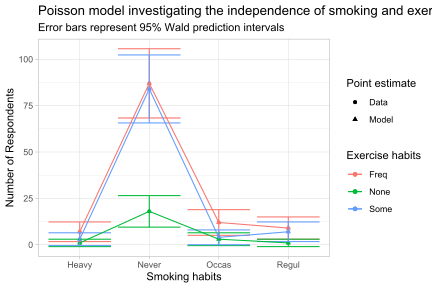
Binomial Test: Logistic Regression
Classical Test: Exact Binomial Test
The binomial test is often used for comparing the number of “succeses” (hits, ‘yes’ answers, etc.) to “failures”, where the null hypothesis that the probability of success is 0.5 (by default; you can change this manually). In R, it can be computed as number of success and total number:
binom.test(50, 100)##
## Exact binomial test
##
## data: 50 and 100
## number of successes = 50, number of trials = 100, p-value = 1
## alternative hypothesis: true probability of success is not equal to 0.5
## 95 percent confidence interval:
## 0.3983211 0.6016789
## sample estimates:
## probability of success
## 0.5Or as number of success vs. number of failures:
binom.test(c(50,50))##
## Exact binomial test
##
## data: c(50, 50)
## number of successes = 50, number of trials = 100, p-value = 1
## alternative hypothesis: true probability of success is not equal to 0.5
## 95 percent confidence interval:
## 0.3983211 0.6016789
## sample estimates:
## probability of success
## 0.5Note the very subtle difference in the input!
For a more complex example, we can examine handedness.
summary(survey$W.Hnd)## Left Right NA's
## 18 218 1to be more interesting, let’s set our null hypothesis to “probability of being right-handed is 99%” – i.e. that lefties are exceptionally rare. The classical test gives us:
hand.binom <- binom.test(c(218,18),p=.99)
hand.binom##
## Exact binomial test
##
## data: c(218, 18)
## number of successes = 218, number of trials = 236, p-value = 5.234e-11
## alternative hypothesis: true probability of success is not equal to 0.99
## 95 percent confidence interval:
## 0.8821360 0.9541722
## sample estimates:
## probability of success
## 0.9237288Explicit GLM: Logit (or Probit)
For the exact equivalent to the classical binomial test, we only care what the probability of the Bernoulli trial is and whether it differs from our null hypothesis. This corresponds to an intercept only binomial model. We’ll use the logit link function, but this method can be easily adapted for probit regression.
hand.glm <- glm(W.Hnd ~ 1, data=survey, family=binomial(link="logit"))
summary(hand.glm)##
## Call:
## glm(formula = W.Hnd ~ 1, family = binomial(link = "logit"), data = survey)
##
## Coefficients:
## Estimate Std. Error z value Pr(>|z|)
## (Intercept) 2.4941 0.2452 10.17 <2e-16 ***
## ---
## Signif. codes: 0 '***' 0.001 '**' 0.01 '*' 0.05 '.' 0.1 ' ' 1
##
## (Dispersion parameter for binomial family taken to be 1)
##
## Null deviance: 127.24 on 235 degrees of freedom
## Residual deviance: 127.24 on 235 degrees of freedom
## (1 observation deleted due to missingness)
## AIC: 129.24
##
## Number of Fisher Scoring iterations: 5Probability density function of Logistic distribution
When the location parameter \(μ\) is \(0\) and the scale parameter \(s\) is \(1\), then the probability density function of the logistic distribution is given by
\[{\displaystyle {\begin{aligned}f(x;0,1)&={\frac {e^{-x}}{(1+e^{-x})^{2}}}\\[4pt]&={\frac {1}{(e^{x/2}+e^{-x/2})^{2}}}\\[5pt]&={\frac {1}{4}}\operatorname {sech} ^{2}\left({\frac {x}{2}}\right).\end{aligned}}}\] Thus in general the density is:
\[{\displaystyle {\begin{aligned}f(x;\mu ,s)&={\frac {e^{-(x-\mu )/s}}{s\left(1+e^{-(x-\mu )/s}\right)^{2}}}\\[4pt]&={\frac {1}{s\left(e^{(x-\mu )/(2s)}+e^{-(x-\mu )/(2s)}\right)^{2}}}\\[4pt]&={\frac {1}{4s}}\operatorname {sech} ^{2}\left({\frac {x-\mu }{2s}}\right).\end{aligned}}}\]
umulative distribution function The logistic distribution receives its name from its cumulative distribution function, which is an instance of the family of logistic functions. The cumulative distribution function of the logistic distribution is also a scaled version of the hyperbolic tangent.
\[{\displaystyle F(x;\mu ,s)={\frac {1}{1+e^{-(x-\mu )/s}}}={\frac {1}{2}}+{\frac {1}{2}}\operatorname {tanh} \left({\frac {x-\mu }{2s}}\right).}\] In this equation \(μ\) is the mean, and \(s\) is a scale parameter proportional to the standard deviation.
We can convert logistic coefficients to probabilities with the plogis function:
coef(hand.glm)## (Intercept)
## 2.494123plogis(coef(hand.glm))## (Intercept)
## 0.92372881/2+1/2*tanh(coef(hand.glm)/2)## (Intercept)
## 0.9237288(If we just want odds-ratios, then simple exponentiation would suffice.)
This matched our estimate via the classical test. But how do we test against our null hypothesis of 99% probability? First we convert probability to log-odds:
logit.null <- qlogis(.99)
logit.null## [1] 4.595121/2+1/2*tanh(logit.null/2)## [1] 0.99Next, we use Wald confidence intevals to see if that value is included. confint()
confint(hand.glm)## 2.5 % 97.5 %
## 2.043428 3.010507It’s not! We can actually see that the previous p-value is the point where the null would be included (confidence intervals can after alll beformed by inverting tests):
confint(hand.glm,level=1-hand.binom$p.value)## 0 % 100 %
## 1.162023 4.600165(Some of the decimal digits are off here because it’s a finite sample.)
Proportion Test: (Multinomial) Logistic or Poisson Model
Classical Test: Test for Equality of Proportions
A generalization of the binomial test is the test of proportions. For the simplest case, it’s simply a different way of expressing the binomial test:
prop.test(218,n=236,p=.99,correct=FALSE)##
## 1-sample proportions test without continuity correction
##
## data: 218 out of 236, null probability 0.99
## X-squared = 104.7, df = 1, p-value < 2.2e-16
## alternative hypothesis: true p is not equal to 0.99
## 95 percent confidence interval:
## 0.8826712 0.9512130
## sample estimates:
## p
## 0.9237288(We should probably use Yates’ correction here, but our sample size isn’t that small and the various small sample size corrections hide the asymptotic equivance of the tests. Nonetheless, the p -values differ here because proportion test is an asymptotic/approximate test, while the binomial test is an exact test. )
With prop.test, we can also express various proportions within multiple categories and compare them. For example, we can see if the proportion of lefties differs between the sexes:
hand.sex <- xtabs(~Sex + W.Hnd,data=survey)
hand.sex## W.Hnd
## Sex Left Right
## Female 7 110
## Male 10 108# swap the order so that "righties" are in the "success" column on the left
prop.test(hand.sex[, c("Right","Left")])##
## 2-sample test for equality of proportions with continuity correction
##
## data: hand.sex[, c("Right", "Left")]
## X-squared = 0.23563, df = 1, p-value = 0.6274
## alternative hypothesis: two.sided
## 95 percent confidence interval:
## -0.04971453 0.09954794
## sample estimates:
## prop 1 prop 2
## 0.9401709 0.9152542prop.test(c(110,108),n=c(117,118))##
## 2-sample test for equality of proportions with continuity correction
##
## data: c(110, 108) out of c(117, 118)
## X-squared = 0.23563, df = 1, p-value = 0.6274
## alternative hypothesis: two.sided
## 95 percent confidence interval:
## -0.04971453 0.09954794
## sample estimates:
## prop 1 prop 2
## 0.9401709 0.9152542So now, we have by-sex estimates of the proportions as well as an estimate of the difference. (The point estimate of the difference is implicit in the sample estimates and the 95% confidence interval of the difference.) Note that prop.test doesn’t allow you to specify what the proportion is for multiple groups – prop.test only tests for the equality of proportions between groups.
prop.test will even allow you to have an arbitrary number of categories as rows in your table. For example, we could consider the relationship of handedness to smoking:
hand.smoke <- xtabs(~Smoke + W.Hnd,data=survey)
print(hand.smoke)## W.Hnd
## Smoke Left Right
## Heavy 1 10
## Never 13 175
## Occas 3 16
## Regul 1 16prop.test(hand.smoke)##
## 4-sample test for equality of proportions without continuity correction
##
## data: hand.smoke
## X-squared = 2.0307, df = 3, p-value = 0.5661
## alternative hypothesis: two.sided
## sample estimates:
## prop 1 prop 2 prop 3 prop 4
## 0.09090909 0.06914894 0.15789474 0.05882353However, for more than two-groups, prop.test doesn’t provide an estimate of the difference because there are multiple estimated differences.
Explicit GLM: Logit
Now, all this success and failure language suggest that we can express these models as binomial GLMs, and we can. For sex, we have:
hand.sex.binom <- glm(W.Hnd ~ 0 + Sex, data=na.omit(survey), family=binomial(link="logit"),
contrasts = list(Sex="contr.Sum"))
hand.sex.binom.null <- glm(W.Hnd ~ 1, data=na.omit(survey), family=binomial(link="logit"))
print(summary(hand.sex.binom))##
## Call:
## glm(formula = W.Hnd ~ 0 + Sex, family = binomial(link = "logit"),
## data = na.omit(survey), contrasts = list(Sex = "contr.Sum"))
##
## Coefficients:
## Estimate Std. Error z value Pr(>|z|)
## SexFemale 2.7600 0.4611 5.985 2.16e-09 ***
## SexMale 2.3979 0.3948 6.074 1.25e-09 ***
## ---
## Signif. codes: 0 '***' 0.001 '**' 0.01 '*' 0.05 '.' 0.1 ' ' 1
##
## (Dispersion parameter for binomial family taken to be 1)
##
## Null deviance: 232.897 on 168 degrees of freedom
## Residual deviance: 86.099 on 166 degrees of freedom
## AIC: 90.099
##
## Number of Fisher Scoring iterations: 5print(plogis(coef(hand.sex.binom)))## SexFemale SexMale
## 0.9404762 0.9166667# non-overlap of83% CIs corresponds to 95% CI of diff not crossing zero:
# https://rpubs.com/bbolker/overlapCI
print(plogis(confint(hand.sex.binom,level=0.83)))## 8.5 % 91.5 %
## SexFemale 0.8984303 0.9694946
## SexMale 0.8691164 0.9518829anova(hand.sex.binom.null, hand.sex.binom, test="Chisq")## Analysis of Deviance Table
##
## Model 1: W.Hnd ~ 1
## Model 2: W.Hnd ~ 0 + Sex
## Resid. Df Resid. Dev Df Deviance Pr(>Chi)
## 1 167 86.459
## 2 166 86.099 1 0.36054 0.5482print(prop.test(hand.sex[ , c(2,1)], correct=FALSE))##
## 2-sample test for equality of proportions without continuity correction
##
## data: hand.sex[, c(2, 1)]
## X-squared = 0.54351, df = 1, p-value = 0.461
## alternative hypothesis: two.sided
## 95 percent confidence interval:
## -0.04120374 0.09103715
## sample estimates:
## prop 1 prop 2
## 0.9401709 0.9152542print(prop.test(hand.sex[ , c(2,1)], correct=TRUE))##
## 2-sample test for equality of proportions with continuity correction
##
## data: hand.sex[, c(2, 1)]
## X-squared = 0.23563, df = 1, p-value = 0.6274
## alternative hypothesis: two.sided
## 95 percent confidence interval:
## -0.04971453 0.09954794
## sample estimates:
## prop 1 prop 2
## 0.9401709 0.9152542This suggests that our test is doing something right – it’s not quite as conservative as Yates correction, but because it’s an explicit GLM, it’s generative and so we can plot and make predictions and all that.
Explicit GLM: Poisson
Now, some of you might have noticed that the multi-condition proportion test can be viewed as having “occurrences [out of total events]” instead of “successes” and “failures”
If you were paying attention earlier, this should make you think of the Poisson model. Let’s try to reformulate this as a Poisson model. First, let’s convert our data from single Bernoulli trials to observed occurences in a given time unit (here: everything).
hand.sex.poisson <- glm(Freq ~ 1 + Sex * W.Hnd, data=as.data.frame(hand.sex), family=poisson(),
contrasts = list(Sex="contr.Sum"))
hand.sex.poisson.null <- glm(Freq ~ 1 + Sex + W.Hnd, data=as.data.frame(hand.sex), family=poisson(),
contrasts = list(Sex="contr.Sum"))
print(summary(hand.sex.poisson))##
## Call:
## glm(formula = Freq ~ 1 + Sex * W.Hnd, family = poisson(), data = as.data.frame(hand.sex),
## contrasts = list(Sex = "contr.Sum"))
##
## Coefficients:
## Estimate Std. Error z value Pr(>|z|)
## (Intercept) 3.40778 0.12777 26.671 <2e-16 ***
## Sex[S.Female] -0.08458 0.12777 -0.662 0.508
## W.Hnd[S.Left] -1.28353 0.12777 -10.046 <2e-16 ***
## Sex[S.Female]:W.Hnd[S.Left] -0.09376 0.12777 -0.734 0.463
## ---
## Signif. codes: 0 '***' 0.001 '**' 0.01 '*' 0.05 '.' 0.1 ' ' 1
##
## (Dispersion parameter for poisson family taken to be 1)
##
## Null deviance: 2.0429e+02 on 3 degrees of freedom
## Residual deviance: -1.1102e-15 on 0 degrees of freedom
## AIC: 29.026
##
## Number of Fisher Scoring iterations: 3anova(hand.sex.poisson.null, hand.sex.poisson, test="Chisq")## Analysis of Deviance Table
##
## Model 1: Freq ~ 1 + Sex + W.Hnd
## Model 2: Freq ~ 1 + Sex * W.Hnd
## Resid. Df Resid. Dev Df Deviance Pr(>Chi)
## 1 1 0.54629
## 2 0 0.00000 1 0.54629 0.4598The \(p\)-values for the likelihood-ratio and for the interaction term lie on either side of the p -value of uncorrected test of proportions. The LRTs are known to be more conservative than the Wald (coefficient) tests, so this is not surprising within the Poisson model and suggests moreover that the Poisson model largely agrees with the uncorrected test for equality of proportions.
Classical Test: Poisson Test
Now, you’ve seen that the proportion test is effectively just a generalization of the binomial test. And you’ve seen that we can model the proportion test with a Poisson model. So the following facts from R’s documentation for poisson.test should not surprise you:
- The one-sample case is effectively the binomial test with a very large n. The two sample case is converted to a binomial test by conditioning on the total event count, and the rate ratio is directly related to the odds in that binomial distribution.
Let’s take this bit by bit:
- The one-sample case is effectively the binomial test with a very large n.
print(summary(survey$W.Hnd))## Left Right NA's
## 18 218 1print(binom.test(218,n=236))##
## Exact binomial test
##
## data: 218 and 236
## number of successes = 218, number of trials = 236, p-value < 2.2e-16
## alternative hypothesis: true probability of success is not equal to 0.5
## 95 percent confidence interval:
## 0.8821360 0.9541722
## sample estimates:
## probability of success
## 0.9237288print(prop.test(218,n=236))##
## 1-sample proportions test with continuity correction
##
## data: 218 out of 236, null probability 0.5
## X-squared = 167.8, df = 1, p-value < 2.2e-16
## alternative hypothesis: true p is not equal to 0.5
## 95 percent confidence interval:
## 0.8801771 0.9528813
## sample estimates:
## p
## 0.9237288print(poisson.test(218,236))##
## Exact Poisson test
##
## data: 218 time base: 236
## number of events = 218, time base = 236, p-value = 0.2545
## alternative hypothesis: true event rate is not equal to 1
## 95 percent confidence interval:
## 0.8051693 1.0548307
## sample estimates:
## event rate
## 0.9237288Oh wow, those do all line up. The Poisson terminology of “rate” per unit “time” sounds weird, but we can also think of “events” being the same as “sucesses” and “rate” being the same as “probability” and then “unit time” being the same as “observation”.
- The two sample case is converted to a binomial test by conditioning on the total event count, and the rate ratio is directly related to the odds in that binomial distribution.
hand.sex <- xtabs(~Sex + W.Hnd,data=survey)
print(hand.sex)## W.Hnd
## Sex Left Right
## Female 7 110
## Male 10 108# reverse the column order so that right-handedness is "sucess"
hand.sex <- hand.sex[, c("Right","Left")]
binom.female <- binom.test(hand.sex["Female",])
binom.male <- binom.test(hand.sex["Male",])
print(sprintf("Ratio of conditional binomial probabilities: %f", binom.female$estimate / binom.male$estimate))## [1] "Ratio of conditional binomial probabilities: 1.027224"total_righties <- sum(hand.sex[,"Right"])
total_females <- sum(hand.sex["Female",])
total_males <- sum(hand.sex["Male",])
total_all <- sum(hand.sex)
binom.test(hand.sex[,"Right"], total_righties, total_females / total_all)##
## Exact binomial test
##
## data: hand.sex[, "Right"]
## number of successes = 110, number of trials = 218, p-value = 0.8923
## alternative hypothesis: true probability of success is not equal to 0.4978723
## 95 percent confidence interval:
## 0.4362578 0.5727901
## sample estimates:
## probability of success
## 0.5045872prop <- prop.test(hand.sex)
print(prop)##
## 2-sample test for equality of proportions with continuity correction
##
## data: hand.sex
## X-squared = 0.23563, df = 1, p-value = 0.6274
## alternative hypothesis: two.sided
## 95 percent confidence interval:
## -0.04971453 0.09954794
## sample estimates:
## prop 1 prop 2
## 0.9401709 0.9152542print(sprintf("Ratio of proportions: %f", prop$estimate[1]/prop$estimate[2]))## [1] "Ratio of proportions: 1.027224"print(poisson.test(hand.sex[,"Right"],c(total_females, total_males)))##
## Comparison of Poisson rates
##
## data: hand.sex[, "Right"] time base: c(total_females, total_males)
## count1.Female = 110, expected count1 = 108.54, p-value = 0.8923
## alternative hypothesis: true rate ratio is not equal to 1
## 95 percent confidence interval:
## 0.7804746 1.3522292
## sample estimates:
## rate ratio.Female
## 1.027224Huh. The p-values from the binomial test and Poisson test line up perfectly, and ratio of proportions identical across all tests.